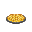
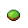

Guide to Food and Drinks
| This page needs revising!
The following page is out of date and/or needs to be revised. If the page's guide needs revision, see here for an example. |
Drinks
Note: These mixtures are usually poured into a glass (50 units), and are typically mixed in a shaker (100 units). If there are several reagents in the glass it will get the look of the drink with the largest amount of units.
A drink's strength determines how quickly a drinker gets drunk and how much it improves the chances of success in surgery when applied externally.
A Quick, comprehensible list of what a drink will do to you:
0: Non-alcoholic.
1-10: Barely classifiable as alcohol - occasional slurring.
11-20: Slight alcohol content - slurring.
21-30: Below average - imbiber begins to look slightly drunk.
31-40: Just below average - no unique effects.
41-50: Average - mild disorientation, imbiber begins to look drunk.
51-60: Just above average - disorientation, vomiting, imbiber begins to look heavily drunk.
61-70: Above average - small chance of blurry vision, imbiber begins to look smashed.
71-80: High alcohol content - blurry vision, imbiber completely shitfaced.
81-90: Extremely high alcohol content - heavy toxin damage, passing out.
91-100: Dangerously toxic - swift death.
Basic Drink Ingredients
| Picture | Cocktail | Strength | Ingredients | Drink Description | Notes |
|---|---|---|---|---|---|
| Absinthe | 80 | 1 part Absinthe | The smell is enough to bring you to the verge of tears. The hint of liquorice threatens to bring you over the edge. | Has a chance to cause hallucinations. To acquire: In Booze Dispenser. Or Booze-O-Mat Severtail Green, 100 units each. | |

|
Ale | 65 | 1 part ale | A sweet and syrupy looking alcohol. You're lucky it wasn't lost to history. | To acquire: In Booze-O-Mat, 6 bottles RHIMBASA TAP, 30 units each. Or from the Service borg shaker. |

|
Amaretto | 25 | 1 part Amaretto | A gentle and syrup like drink, tastes of almonds and apricots. | To acquire: In Booze-O-Mat, 5 bottles Lu'Ni'Xer'Nan Amaretto. |

|
Aloe Juice | N/A | 1 part aloe juice | Juiced aloe vera. It's an acquired taste. | 30% chance to heal 1 toxin damage. To acquire: Juice aloe or grind aloe cream. |
| Applejack | 20 | 1 part applejack | The officially sponsored drink by the National Association for Anti-Gravity Automobile Dragracing (NAAGAD). | To acquire: In Booze-O-Mat, 5 bottles of Mars Lightning. | |
| Apple Juice | N/A | 1 part apple juice | The sweet juice of an apple, fit for all ages. | To acquire: Juice an apple. | |
| Banana Juice | N/A | 1 part banana juice | The raw essence of a banana. HONK | Heals clowns and monkeys of brute and burn damage To acquire: Grind or juice bananas. | |
| Beer | 25 | 1 part beer | A pint of beer. | To acquire: In Booze-O-Mat, 6 bottles of Space Beer, 30 units each. Or 1000 units in Bartender's beer keg. Or from Service borg shaker. Or mix 10 parts Flour, 5 units universal enzyme (catalyst). | |
| Berry Juice | N/A | 1 part berry juice | Berry juice. Technically a fruit punch all on its own! | To acquire: Juice berries. | |
| Bungo Juice | N/A | 1 part bungo juice | A botanical experiment in creating a new fruit. It smells faintly citrusy, along with a hint of... banana? | Heals clowns and monkeys of brute and burn damage To acquire: Juice bungo fruit | |
| Carrot juice | N/A | 1 part carrot juice | Mildly sweet, but it won't actually improve your eyesight all that much beyond the baseline... | Heals eye damage. To acquire: Juice carrots. | |
| Champagne | 40 | 1 part champagne | A sparkling wine, traditionally served in a flute that clearly displays the slowly rising bubbles. | To acquire: Booze-O-Mat, 5 bottles of Treu Champagne. | |
| Clown's Tears | N/A | 1 part clown's tears | Not very funny. | To acquire: Grind some clown's tear soup. | |
| Coffee | N/A | 1 part coffee | Black coffee, served straight. It'll be pretty bitter without anything else in it! | Heals dizziness, drowsiness, wakes up, heats up if frozen. To acquire: Grind dried coffee beans to get Coffee Powder. Mix 1 Coffee Powder + 5 units water. Or from the Hot Drinks -vending machines. | |

|
Cognac | 75 | 1 part cognac | You wonder how many exhausted Solarian bureaucrats are drinking this the same way you are, right now. | To acquire: In Booze Dispenser. Or in Booze-O-Mat, 5 bottles of Geheimnis Cognac, 100 units each. Or from Service borg shaker. |

|
Comet Trail | N/A | 1 part Comet Trail | A glass of Comet Trail. Taste the stars! | Heals drowsiness and sleeping, cools down if overheated. To acquire: 10 cans of Comet Trail in Robust Softdrinks -vending machines. |
| File:Soy milk glass.png | Creme de Coconut | 20 | 1 part creme de coconut | A coconut liqueur for smooth, creamy, tropical drinks. | To acquire: In Booze Dispenser. |
| Creme de Menthe | 20 | 1 part creme de menthe | Bright green and minty - enough to tell you what it's going to taste like. | To acquire: In Booze Dispenser. | |

|
Creme de Cacao | 20 | 1 part creme de cacao | Creme de Cacao - chocolate-wine, essentially. Not milk chocolate, so expect some bite. | To acquire: In Booze Dispenser. |
| Fernet | 80 | 1 part Fernet | A bitter and aromatic drink, commonly enjoyed in the intersolar cantons due to relaxed alcoholic tariffs from being technically classified as a medicinal beverage. Commonly mixed with cola-based soft drinks. | Reduces satiety a lot, but causes a lot of toxin damage if starving. To acquire: In hacked Booze-O-Mat, 5 bottles of Fernet Bronca, 100 units each. Or from Service borg shaker. | |
| Garlic Juice | N/A | 1 part garlic juice | Crushed (not juiced)garlic. Chefs love it. | 20% chance per tick to heal 1 brute and burn if you're a cook. Prevents vampires from biting you. Very slow metabolism rate (0.06u). To acquire: Grind garlic. | |

|
Gin | 45 | 1 part gin | A glass of gin, made with a specific type of berry that leaves it smelling like the tree it came from. It's enough to wet your eyes. | To acquire: In Booze Dispenser. Or In Booze-O-Mat, 5 bottles of Neue Wacholder Gin, 100 units each. |

|
Grenadine | N/A | 1 part grenadine | Flavored syrup, traditionally used for mixing drinks. Having it straight is certainly a choice. | To acquire: In Booze-O-Mat, 5 bottles of Three-Star Grenadine. |

|
Glass of Ice | N/A | 1 part ice | Generally, you're supposed to put something else in there too... | Cools down. To acquire: In Booze-O-Mat, 9 Ice Cups, 30 units each. Or from Service borg shaker. |
| Hard Cider | 25 | 1 part hard cider | Sharper tasting, alcoholic apple cider. | Cools down. To acquire: In Booze-O-Mat, 5 Neue Hamburg Spiced, 50u each. | |
| File:Holy water glass.png | Holy Water | N/A | 1 part holy water | A glass of holy water. | Makes people jittering, stuttering, dizzy. Heals cultism. To acquire: Have the Chaplain hit a water container with the Bible. Or One Flask of Holy Water, 100 units, in the Chapel. |
| Kahlúa | 45 | 1 part Kahlúa | Bitter from the coffee and alcohol alike! | Heals dizziness, drowsiness and sleeping. To acquire: In Booze Dispenser. Or Booze-O-Mat, 5 bottles of Keh'Lu'Tex Liqueur, 100 units each. Or from Service borg shaker. Or mix 5 coffee + 5 sugar + 5 universal enzyme. | |
|
|
Lemon Juice | N/A | 1 part lemon juice | A glass of intensely sour lemon juice. You wonder to yourself: how much do you really need to ward off scurvy for it to come to the point? | To acquire: In Soda Dispenser. Or juice lemons. |
| Lemon-Lime | N/A | 1 part Lemon-Lime | You're pretty certain a real fruit has never actually touched this. | Cools down if overheated. To acquire: In Soda Dispenser. | |
| Light Beer | 5 | 1 part light beer | A pint of watery light beer. | To acquire: Normally found in some prisons and ruins. Pray to the Ruin RNG or God and hope they feel merciful today. | |
| Lime Juice | N/A | 1 part lime juice | Lime juice. You might want to mix something with this instead of drinking it straight... | 20% chance to heal 1 toxin damage. To acquire: In Soda Dispenser. Or In Booze-O-Mat, 4 bottles of Lime Juice, 100 units each. Or from Service borg shaker. Juice limes. | |
| Menthol | N/A | 1 part menthol | Tastes naturally and sharply minty, with a mild numbing sensation. | Prevents coughing. To acquire: In Booze-O-Mat, 4 cartons of Menthol, 100 units each. Or from the soda dispenser. | |
| File:Milk glass.png | Milk | N/A | 1 part milk | A glass of frothy milk. You wonder what animal this could have come from, if at all. | 20% chance per tick to heal 1 brute damage in a random body part and purges capsaicin oil. To acquire: Biogenerator. Or milk a goat or a cow. Or from Space Milk cartons, 50 units in each. 5 are found in kitchen freezer. Ordered food crate has one. |

|
Milk Cream | N/A | 1 part cream | It's a bit thick to drink straight. | 20% chance per tick to heal 1 brute damage in a random body part. To acquire: In Booze-O-Mat (cream), 4 bottle of Milk Cream, 100 units each. Or from Service borg shaker. Or from the Biogenerator. |
| File:Nothing glass.png | Nothing | N/A | 1 part nothing | Absolutely nothing. | Heals mimes of brute damage and mutes them. To acquire: Mime's Bottle of Nothing, or by grinding Mimanas. |

|
Orange Juice | N/A | 1 part orange juice | Tart and sweet. It might have pulp, if that's what you wanted. | 30% chance to heal 1 suffocation damage. To acquire: In Booze-O-Mat, 4 bottles of Orange Juice, 100 units each. Or from Service borg shaker. 15 units in each can of Star-kist, along with 15 units of space cola. Or juice oranges. |
| Parsnip Juice | N/A | 1 part parsnip juice | Starchy and uncommon. | To acquire: Juice a parsnip. | |

|
Peach Juice | N/A | 1 part peach juice | Just peachy. | To acquire: Grind canned peaches, which can only be found in maintenance. |

|
Pineapple Juice | N/A | 1 part pineapple juice | Tart, sweet juice from the tropical pineapple. | To acquire: In Soda Dispenser. Or juice pineapples. |

|
Poison Berry Juice | N/A | 1 part poison berry juice | Berry juice. Technically a fruit punch all on its own! | Shows up as 'Berry Juice'. Crit dose: 40 units/100 ticks. To acquire: Juice poison berries. |
| Potato Juice | N/A | 1 part potato juice | Starchy. It coats your mouth with a filament afterwards, which really isn't helping it's case. | To acquire: Juice potatoes. | |

|
Rum | 60 | 1 part rum | There's no need to worry about being seen as a pirate with one of these. If you add enough ice and let it melt, it'll turn into grog. | To acquire: In Booze Dispenser. Or in Booze-O-Mat, 5 bottles of Ahkskra Spiced, 100 units each. Or from Service borg shaker. |

|
Sake | 70 | 1 part sake | A sweet rice wine. | To acquire: In Booze Dispenser. Or in Booze-O-Mat, 5 bottles of Sakamai Sake. Or mix 10 parts Rice, 5 units universal enzyme (catalyst). |
| File:Soda water glass.png | Soda Water | N/A | 1 part soda water | Soda water. You feel like you should add something to this... | Heals dizziness and drowsiness. Cools down if overheated. To acquire: In Booze-O-Mat, Or 8 cans in Booze-O-Mat, Stitiamix Club. 50 units each. Or from Service borg shaker. |

|
Sol Dry | N/A | 1 part Sol Dry | A soothing, mellow drink made from ginger. You can't imagine drinking a carbonated drink while in microgravity, though, nausea or not... | Reduces disgust. To acquire: 10 cans of Sol Dry in Robust Softdrinks -vending machines. Or 8 cans in Booze-O-Mat, Sol Dry. 30 units in each can. |
| File:Soy milk glass.png | Soy Milk | N/A | 1 part soy milk | Despite being made from soybeans, it sates the same desire to have an entire glass of milk. | 20% chance per tick to heal 1 brute damage in a random body part. To acquire: Biogenerator or from |
| Space Cola | N/A | 1 part Space Cola | A carbonated cola. You should drink it before it gets flat! | Cools down if overheated. To acquire: 10 cans of Space Cola in Robust Softdrinks -vending machines. Or 8 cans in Booze-O-Mat. Or from Service borg shaker. 30 units in each can of Master Cola. | |

|
Space-Up | N/A | 1 part Space-Up | Space-Up. It helps keep your cool. | Cools down if overheated. To acquire: 10 cans of Space-Up in Robust Softdrinks -vending machines. |

|
Tadrixx | N/A | 1 part Tadrixx | A cup of fizzy Tadrixx. It smells sweet. | Heals drowsiness, cools down if overheated. To acquire: 10 cans of Tadrixx in Robust Softdrinks -vending machines. |
| Tea | N/A | 1 part tea | There's a latent desire to drink this out of a teacup, but there's no time for teatime out here. | Similar to coffee but also removes jitteriness and a small amount of toxins. To acquire: Grind dried tea leaves to get Tea Powder. Mix 1 Tea Powder + 5 units water. Or from the Hot Drinks -vending machines. | |

|
Tequila | 70 | 1 part tequila | Despite the strong, woody taste, there's just enough sweetness to keep you coming for more. | To acquire: In Booze Dispenser. Or in Booze-O-Mat, 5 bottles of Rimeki Letisa, 100 units each. Or from Service borg shaker. |
| Tomato Juice | N/A | 1 part tomato juice | Some part of you wonders if this could have been a soup at some point. | 20% chance to heal 1 burn damage. Blood shows the same way. To acquire: In Booze-O-Mat, 4 bottles of Tomato Juice, 100 units each. Or from Service borg shaker. Juice tomatoes. | |
| File:Tonic water glass.png | Tonic Water | N/A | 1 part tonic water | Quinine and carbonated water. You really should add something to this... | Heals dizziness, drowsiness and sleeping, cools down if overheated. To acquire: In Booze Dispenser. Or in Booze-O-Mat, 8 bottles of Sixikirtchia's Tonic, 50 units each. Or from Service borg shaker. |
|
|
Triple Sec | 30 | 1 part triple sec | A glass of straight triple sec. Citrusy and warm. | To acquire: In a booze dispenser. |
| Vermouth | 45 | 1 part vermouth | Vermouth was used as a medicine in the past, and the flavor makes sure to remind you of that. | To acquire: In Booze Dispenser. Or in Booze-O-Mat, 5 bottles of Whitespear Dry, 100 units each. Or from Service borg shaker. | |
|
|
Vodka | 65 | 1 part vodka | It's almost difficult to tell the glass is full of vodka until you tip it around. The smell makes your nose wrinkle... but it might just be worth it. | To acquire: In Booze Dispenser, 5 bottles of Triple Horned. Or mix 10 potato juice + 5 universal enzyme |

|
Water | N/A | 1 part water | The father of all refreshments. | To acquire: Sinks. Watertanks. |
| File:Watermelon juice glass.png | Watermelon Juice | N/A | 1 part watermelon juice | A glass of watermelon juice. Mild and sweet. | To acquire: Juice watermelon slices. |
| File:Welder fuel glass.png | Welder Fuel | N/A | 1 part welding fuel | Unless you are an industrial tool, this is probably not safe for consumption. | Crit dose: 40 units/100 ticks. To acquire: Find a Welding fuel tank. |
| Whiskey | 75 | 1 part whiskey | Often described as having a silky mouthfeel and a smokey aftertaste. The brown-amber color catches the light very well. | To acquire: In Booze Dispenser. Or in Booze-O-Mat, 5 bottles of Kadi-Witka Reserve, 100 units each. | |

|
Wine | 35 | 1 part wine | Deeply red wine in a glass. You're not enough of a sommelier to really describe how it smells. | To acquire: In Booze-O-Mat, 5 bottles of Waldstätte Sauvignon, 100 units each. Or from Service borg shaker. Or mix 10 grape juice + 5 universal enzyme (10u enzyme instantly turns it into grappa). |
Mixed Drinks
| Picture | Cocktail | Strength | Ingredients | Drink Description | Notes |
|---|---|---|---|---|---|
| Aloe | 35 | 3 part watermelon juice, 1 part cream, 2 part whiskey | Zohil Cream and watermelon juice. Mellows out the alcoholic bite for a mild drink. | ||

|
Andalusia | 40 | 1 part rum, 1 part whiskey, 1 part lemon juice | A nice, strangely named drink. Theoretically named after a particular region on Terra, but no one's quite sure where. | |

|
Anti-Freeze | 35 | 2 parts vodka, 1 part cream, 1 part ice | Vodka, cream, and ice. No actual antifreeze included, of course. | Heats you up if you are frozen. |

|
Arnold Palmer | N/A | 1 part lemonade, 1 part tea | Iced tea and lemonade. You don't think you know any Arnolds, though | |
| Ash-Shield | 50 | 1 part cognac, 1 part creme de cacao, 1 part cream | While not a traditional trickwine by any means (and considered in poor taste in mixing), this drink is said to embolden the shield in the imbiber's hand. Just don't let it engender passivity. | If you have a shield it will increase the block chance by 10 percentage points. IBA Official Cocktail | |

|
Atomic Bomb | N/A | 10 parts AM-G, 1 part Uranium | Devastating to you and everyone around you, especially if you get drunk enough from it. | Makes you druggy, confused, dizzy, stuttering; eventually, sleeping. Can be mixed in a shot glass. Makes 10 parts instead of 11. |

|
AM-G | 85 | 1 part Zohil cream, 1 part Kahlúa, 1 part cognac | Coffee liquor, Zohil Cream, and cognac. Enough to make you hide before the blast. | IBA Official Cocktail |
| Bacchus' Blessing | 300 | 1 part Hooch, 1 part absinthe, 1 part Shortstop, 1 part Gorlex Suprise | Unidentifiable mixture. Unmeasurably high alcohol content. | Can kill you if you drink enough. | |
| Bahama Mama | 35 | 2 parts rum, 1 part Creme de Coconut, 1 part Kahlúa, 1 part pineapple juice | A tropical cocktail with a complex blend of fruity flavors. It makes you think about going on vacation someday... | Existing cocktail | |
| Barefoot | 45 | 1 part cream, 1 part vermouth, 1 part berry juice | To be enjoyed on the beach or by a pool. You should keep your shoes on, though | Quickly heals brute damage when not wearing shoes. | |
| Bastion Bourbon | 30 | 1 part tea, 1 part creme de menthe, 1 part triple citrus, 1 part berry juice | Soothing hot herbal brew with restorative properties. Hints of citrus and berry flavors. | When it's in your system, it will very slowly heal you as long as you're not in critical. When it's first added to your system, you heal an amount of each damage type equal to the volume taken in, with a max of 10. This is turned to a max of 20 for anyone in critical. Results in 2 parts instead of 4. | |

|
Beepsky Smash | 60 | 2 parts quadruple sec, 2 parts lime juice, 1 part Iron | Heavy, hot and strong. Just like the sting of a stunbaton. | Summons a stream of securitron hallucinations, which run at you one by one and deal 40 to 70 stamina damage. If overdosed (40 units) you become traumatised with a phobia of security. If you are a proper member of security, you instead regenerate 10 stamina, get minor hallucinations and won't get overdosed. Metabolization rate is 0.5. |

|
Between the Mandibles | N/A | 1 part Mushroom Hallucinogen, 1 part Pan-Galactic Gargle Blaster | Named after a request from a clueless spacer who asked for Rachnid venom to be mixed in a house special. While Rachnids don't have venom glands, this'll have you reeling all the same. | Makes you druggy, stuttering and dizzy, then jittering |

|
Between the Sheets | 55 | 1 part rum, 2 parts cognac, 1 part triple sec, 1 part lemon juice | Also known as The Maiden's Prayer, if you're not willing to say the original name aloud. | Having this in your system while you're asleep will slowly heal you. IBA Official Cocktail |

|
Bilk | 15 | 1 part beer, 1 part milk | A brew of milk and beer. You have to wonder if this was made by accident just from the smell. | 10% chance per tick to heal 1 brute damage in a random body part. |

|
Black Rachnid | 70 | 3 parts vodka, 2 parts Kahlúa | An alternative take to the White Gezenan. Doubles as an option for those who can't handle lactose. | IBA official cocktail |
| Blank Paper | 20 | 1 part Silencer, 1 part nothing | A fizzy cocktail for those looking to start fresh. | Heals and mutes mimes. | |
| Bloody Mary | 55 | 1 part vodka, 2 parts tomato juice, 1 part lime juice | Tomato juice, mixed with Vodka and a li'l bit of lime. The taste is acquired, and usually acquired through tgrying to use it as a hangover remedy. | Restores blood. IBA official cocktail | |

|
Blue Cherry Shake | N/A | 1 part ice, 1 part cream , 1 part blue cherry jelly | A blue-cherry milkshake. Generally, the blue is meant to be figurative, but... | |

|
Blueflame Pyrecask | 45 | 1 Cactus Fruit, 100 units Ethanol | A popular Zohil beverage, made by infusing specially-gathered cacti and grapes in ethanol." | Both delicious and unethical. Must be crafted with crafting menu |

|
Booger | 45 | 1 part cream, 1 part banana juice, 1 part rum, 1 part watermelon juice | The name isn't selling the drink very well, is it... | |
| Brave Bull | 60 | 2 parts tequila, 1 part Kahlúa | Tequila and coffee liqueur, brought together to give you the will to pick fights. Don't drink enough to ruin your sense of safety, though. | Temporarily increases maximum health. Existing cocktail | |
| Bridge Bunny | 45 | 2 parts cognac, 1 part triple sec, 1 part lemon juice | You're happy to not pilot the ship after having one of these. | IBA Official Cocktail | |
| Candy Corn Liquor | 75 | 1 glass bottle, 1 candy corn, 100 units Whiskey | Good for your Imagination. | Causes mild hallucinations. Must be crafted with crafting menu | |
| Canton Cocktail | 45 | 1 part Classic Martini, 1 part vodka | A drink intended to be shared across the Solarian cantons | Refers to Triple Entente: French Vermouth, Russian Vodka, English Gin. | |

|
Changeling Sting | 50 | 2 part lemon-lime, 1 part Screwdriver Cocktail | Made by the superstitious. Keeps the changelings away... wherever they may be. | Restores chemicals for changelings. Makes 5 parts instead of 3. |

|
Cherry Shake | N/A | 1 part ice, 1 part cream, 1 part cherry jelly. | A cherry flavored milkshake. Don't get any on your jumpsuit! | |
|
|
Chocolate | N/A | 5 parts water, 1 part Coco Powder | Tasty. | Heats up if frozen |
|
|
Chocolate Milk | N/A | 1 part Milk, 1 part Coco Powder, under 320K temperature. | Tasty. | 20% chance per tick to heal 1 brute damage in a random body part and purges capsaicin oil. |
| Chocolate Pudding | N/A | 2 parts Chocolate Milk, 1 part Egg Yolk | Thick, sweet, and chocolatey. | ||

|
Classic Martini | 60 | 2 parts gin, 1 part vermouth | Rumored to be a favorite amongst the Evidenzkompanien, much to their chagrin. | IBA official cocktail |
| Cafe Latte | N/A | 1 part coffee, 1 part milk | A nice, strong and refreshing beverage. It goes well with a book, if you have the time to read. | Heals dizziness, drowsiness, wakes up, heats up if frozen and 20% chance per tick to heal 1 brute damage in a random body part. | |

|
Choker | 59 | 1 part Nothing, 1 part cream, 1 part sugar | It takes a moment of quiet to really appreciate some drinks - this one doesn't give you the illusion of choice. | Nothing is found in the Mime's Bottle of Nothing. Heals and mutes mimes. |
| Cracked Moon | 70 | 5 parts wine, 1 part Sulphuric Acid | Typically made on a dare by CLIP-BARD crews. It's deadly if incorrectly prepared! | ||

|
Creamtruck | 60 | 1 part laughter, 1 part cream | A distinctly non-kid friendly equivalent to the ice cream truck. | Heals clowns and monkeys of brute and burn damage. |
| Cream Soda | N/A | 2 parts soda water, 2 parts sugar, 1 part vanilla | A classic vanilla flavored soft drink. | Cools down if overheated. Results in 4 parts instead of 5. | |
| Crevice Spike | -10 | 2 parts lime juice, 4 parts capsaicin | Sour, bitter, and smashingly sobering. | It's negative drink power sobers you up, but it deals 3 damage per unit when it first enters your system, up to a max 15 damage on a full 5 unit swig. Won't hurt again until it metabolizes out. Drink from VA-11 Hall-A | |

|
Darkest Chocolate | 40 | 2 parts Black Rachnid, 2 parts Creme de Cacao, 1 part Lightspeed | Darkness within darkness awaits you, spacer! | Makes you emit a faint, shadowy glow. |

|
Demon's Blood | 75 | 1 part Space Mountain Wind, 1 part rum, 1 part blood, 1 part Tadrixx | A drink made with the blood of the server or the patron, which usually results in said patron being thrown out. While most substitute real blood for a saline solution, that drink is actually referred to as 'Demon's Sweat'. | Prevents slaughter demons from dragging you into pools of blood. |

|
Devil's Kiss | 70 | 1 part Blood, 1 part rum, 1 part Kahlúa | The boozier cousin of the Demon's Blood. Typically served in a glass shaped to specifically cut and draw blood from the patron's lip... which deters most. | Causes slaughter demons to take brute damage and eject you if they try to eat you. |
| Doctor's Delight | N/A | 1 part lime juice, 1 part tomato juice, 1 part orange juice, 1 part cream, 1 part Cryoxadone | A homemade curative. Helps the body heal with the nutrition density, but it leaves a gnawing hunger afterwards. | Heals 0.5 of each basic damage type (brute/burn/toxin/oxyloss) every tick, at the cost of making you hungry (unless your roundstart job is in the medical department, in which case it has no effect on your hunger). | |

|
Drop-pod | 31 | 1 part mead, 1 part blood | A commemorative drink, made in the name of those who died during failed orbital drop-pod landings. Technically intended to use the blood of your enemies, but... | |
| Drunken Blumpkin | 50 | 1 part blumpkin juice, 2 parts Zohil cream, 1 part ice | A drink for the confused hydropon worker. | ||
| Eggnog | 1 | 5 parts egg yolk, 5 parts rum, 5 parts cream | For enjoying the Winter Solstice. | ||
| Fanciulli | -10 | 1 part Manhattan, 1 part Fernet | A glass of Fanciulli: a Manhattan with fernet mixed in. Bitter enough to knock some sense into your drunk self. | Reduces satiety. Sobers you up. Causes a tick of 20 stamina damage when first drank. Existing drink. | |
| Fringe Weaver | 90 | 9 parts Ethanol, 1 part sugar | Bubbly, classy, and undoubtedly strong - a Glitch City classic. | Drink from VA-11 Hall-A | |
| Frontier Libre | 50 | 3 parts Rum and Coke, 1 part lime juice | A mix of rum, cola, and lime. A favorite of among independent spacers and the Frontiersmen alike, who named it in the spirit of securing a free Frontier. | Heals revolutionaries. IBA official cocktail | |

|
Gezenan Coffee | 35 | 2 parts Zohil cream, 2 parts coffee | Coffee and alcohol. Traditionally enjoyed in the morning on lazy days. | IBA Official Cocktail |
| Gin Fizz | 45 | 2 parts gin, 1 part soda water, 1 part lime juice | Refreshingly lemony, deliciously dry. | IBA Official Cocktail | |
| Ginger Amaretto | 30 | 1 parts Amaretto, 1 part sol dry, 1 part lemon juice1 part ice | Technically intended to come with a sprig of rosemary... but where are you going to get your hands on that? | ||

|
Gin and Tonic | 25 | 2 parts gin, 1 part tonic water | A mild, venerable cocktail. You wonder if the quinine is doing anything for you. | |

|
Godfather | 50 | 1 parts amaretto, 1 part whiskey | Technically still enjoyed by members of the Intersolar Mafia, though the homage is much older. Pray the orange peel doesn't end up in your mouth. | |

|
Godmother | 50 | 1 parts amaretto, 1 part vodka | Just as enjoyed (and related to) the Intersolar Mafia. You're technically supposed to drink this alongside someone else having a Godfather. | |
| Goldschlager | 25 | 10 parts vodka, 1 part Gold | Extremely high proof, with cinnamon to boot. At least the light catches the gold flakes nicely enough to distract you from the imminent sting. | Exists in real world Makes 10 parts instead of 11. | |

|
Gorlex Gator | 30 | 5 parts Sol Dry, 5 parts vodka, 1 part lime juice, 1 part ice | A chilly drink made in remembrance of Gorlex IV. It's not a wise idea to go ordering this when the PGF are in town, though. | |
| Gorlex Surprise | 90 | 1 part Whiskey Cola, 1 part beer | Infamously named after the accusations of Syndicate-led bombings of space installations. It's a blast! | Fluff: two glasses connected with a tank valve. You need to drink from the valve, else it spills. | |

|
Grape Soda | N/A | 1 part grape juice, 1 part soda water | Artificial grape soda. | Cools you down if overheated. |

|
Grappa | 60 | 1 part wine, 10 units universal enzyme (catalyst) | Despite being made from the recycled remains of wine grapes, it's not bad at all. | |
| Grasshopper | 25 | 5 parts cream, 5 parts creme de menthe, 5 parts creme de cacao | Named after a particularly green insect. Theoretically, there's always adding vodka to this and making it a Flying Grasshopper... | IBA Official Cocktail | |

|
Green Beer | 25 | 10 parts beer, 1 part Green Crayon Powder | A pint of green beer. You get the feeling this had some sort of meaning, once. | Turns you green. Makes 10 parts instead of 11. |
| Grog | 1 | 1 part water, 1 part rum | Watered-down rum, to really stretch out your alcohol rations. A Belter classic. | Exists in real world | |

|
Happy Huntsman | 35 | 1 part Amaretto , 1 part cream, 1 part creme de cacao | A gentle, creamy drink, enjoyed on rare occasions by the Saint Roumain's followers. | |

|
Hearty Punch | 90 | 5 parts Brave Bull, 5 parts Gorlex Suprise, 5 parts absinthe (requires temperature of 315) | An aromatic beverage, served piping hot. According to folktales, it can almost wake the dead. | Provides quick healing for people in critical condition. Results in 1 part instead of 15. |

|
Hivemind | 40 | 2 parts Black Rachnid, 1 part Grenadine, 1 part Vimukti | A legend around this drink states that drinking this at the same time as someone else links your mind with theirs. Are you going to find out? | See Hivemind Host. |

|
Hooch | 100 | 2 parts Ethanol, 1 part welding fuel, 1 unit universal enzyme (catalyst) | You can't help but feel like you'd rather drink anything else right now, just from looking at it. | Slang for moonshine or bootleg alcohol, popular term during prohibition era |
| Hot Ice Coffee | N/A | 1 part coffee, 1 part | The wonders of fusion mixed into a cup of coffee, resulting in an extremely hot-cold drink. | Heals dizziness, drowsiness, wakes up, heats up if frozen and deals 1 toxin damage. | |
| Hullbreach | 40 | 1 part Mojito, 1 part Sbiten | Fire and ice combine in your mouth, like being pulled out into space. | Slowly heals burn damage. | |

|
Hyperspace Highball | 70 | 1 part peach juice, 1 part Bluespace Dust , 2 parts gin
Grind a Bluespace Crystal
|
The glass is seemingly reacting with the bluespace flakes... maybe making this was a poor decision? | Can randomly teleport you short distances and makes you vomit if drunk enough. Makes your vomit look different. Results in 3 parts instead of 4. |

|
Iced Beer | 15 | 5 parts beer, 1 part ice or 10 parts beer, 1 part frost oil | Iced beer, served in a chilled glass. It's cold enough to leave a trail in the air. | Cools you down if overheated |
| Iced Coffee | N/A | 1 part ice, 3 parts coffee | Iced black coffee. It's still going to be pretty bitter on it's own, though! | Cools you down if overheated, removes dizziness, drowsiness and sleep | |
| Iced Tea | N/A | 1 part ice, 3 parts tea | A much more appealing way to have tea while dealing with the heat. | Cools you down if overheated, removes dizziness, drowsiness and sleep. Heals toxin damage. | |

|
Inner Fire | 40 | 2 parts Bahama Mama, 2 parts capsaicin oil, 1 part Kahlua | Not at all made by the Saint Roumain, this drink still bases itself as a test of will used by the hunters to test their endurance to intense heat... and alcohol. | Can make you very hot. |

|
Jackalope | 15 | 2 parts applejack, 1 part grenadine, 1 part lime juice | Enough of these, and you might feel like you're floating. Just don't think you can pilot! | Exists in real life |
| Kong | 75 | 1 glass bottle, 1 candy corn, 100 units Whiskey | Makes You Go Ape! | Has an addiction threshold of 15 units. When in withdrawal, occasionally gives negative moodlets on top of the usual one, while giving depressive messages. Must be crafted with crafting menu | |
| Lean | N/A | 1 Colo cup, 2 Gumball, 5u Morphine, 15u SpaceUp | You just don't often get to see cough syrup out here, and someone had enough to mix it with soda. You're left wondering why. | Slurs Speech and makes you druggy. Must be crafted with crafting menu | |
| Lemonade | N/A | 2 parts lemon juice, 2 parts water, 1 part sugar, 1 part ice | Sweet, slightly tart, and refreshing. You feel some misplaced nostalgia when you have this, even though you're not sure you've ever squeezed a lemon before. | Results in 5 parts instead of 6. | |

|
Lightspeed | 25 | 1 part Zohil cream, 1 part ale | A shot of Zohil cream in a pinch of ale, meant to be downed in one chug - hits you as fast as the name. | Exists in real world |

|
Long Island Iced Tea | 35 | 1 part vodka, 1 part gin, 1 part Cuba Libre, 1 part tequila | The entire liquor cabinet brought together with enough sugar to hide it. | IBA Official Cocktail |
| Twelve Crossings | 30 | 2 parts whiskey, 1 part vermouth | A mixed drink popularized by a murder mystery book series from Teceti. The Detective's undercover drink of choice. He never could stomach gin... | IBA Official Cocktail | |
| Margarita | 35 | 2 parts tequila, 1 part triple sec, 1 part lime juice | On the rocks with salt on the rim. Apparently the name meant something in a language long lost on Earth. | IBA Official Cocktail | |

|
Mead | 30 | 2 units Honey, 5 units universal enzyme (catalyst) | Fermented honey. The gentler sibling to the beer - and almost just as old. | Exists in real world |

|
Miner's Milk | 15 | 1 part sugar, 3 parts Zohil Cream, 2 parts beer, 1 unit Creme De Cacao (catalyst) | All the protein, vitamins and carbs of two full ration packs, plus 15% alcohol. Created by Nanotrasen's Mining and Exploration League, and often still enjoyed in the New Gorlex Republic. | Periodically puts nutriment in your bloodstream. Very slightly reduces stun times. |
| Mirage | 35 | 1 part Fernet, 1 part Creme de Menthe, 1 part Ice | A glass of fernet and mint creme liquor, enjoyed on the warmer days on Teceti. | Cools you down if overheated. Causes a tick of 35 stamina damage when first drank. | |

|
Mojito | 30 | 1 part rum, 1 part sugar, 1 part lime juice, 1 part soda water, 1 part menthol | A drink that looks as refreshing as it tastes. | IBA Official Cocktail |
| File:Moonshine glass.png | Moonshine | 95 | 5 units Nutriment, 5 units Sugar, 5 units universal enzyme (catalyst) | You've really hit rock bottom now... your liver packed its bags and left last night. | |

|
Mothball | 60 | 1 part vodka, 1 part triple sec, 1 part lime juice | Made in an attempt to commemorate the supposed original place mothpeople were created in, though it was since disproven. While moth dust could be used as a garnish, don't go asking for it unless you are one. | IBA Official Cocktail |
| North-South | 25 | 2 parts hard cider, 1 part apple juice, 1 part berry juice | A fruity drink made, apparently, to represent North and South Teceti. You're supposed to hold it in a way that both vials pour together - one on top of the other." | ||

|
Old Timer | 35 | 3 parts whiskey soda, 2 parts parsnip juice, 1 part Ash-Shield | You might not be the target audience of this drink if you're still out in the Frontier, though. | Makes you older. And older, and older. |

|
Out Of Lime | 40 | 1 part Out Of Touch, 1 part lemonade, 1 part Green Beer, 1 part orange juice | A spin on the classic. Artists and street fighters swear by this stuff. | Drinking or getting this splashed on you turns your hair and facial hair color into one of 10 possible ones randomly. |
| Out Of Touch | 40 | 2 parts Screwdriver Cocktail, 1 part Margarita | Perfect for when you're out of time. | Splashing this on metal turns it into bronze, 1 unit per sheet. | |
| Neurotoxin | 50 | 1 part Morphine, 1 part Pan-Galactic Gargle Blaster | The story goes that this drink was made on a bet between Cybersun chemists, debating if a drink could be used to put down a suspected Nanotrasen spy. While morphine wasn't supposed to be used, it put them down all the same. | Drugs you, makes you dizzy, deals up to 75% brain damage over time, randomly causes you to drop items and take stamina damage. After 5 cycles starts randomly paralyzing your limbs. After 30 cycles deals more brain damage but without limit. After 50 cycles (over 20 units) it has a 15% chance per cycle to give you a heart attack. Metabolism rate is 0.4 units. Quickly purged by Neurine. | |
| Pan-Galactic Gargle Blaster | N/A | 1 part gin, 1 part vodka, 1 part whiskey, 1 part cognac, 1 part lime juice | Does... does this mean that Arthur and Ford are on the station? Oh joy. | Makes you dizzy, then stuttering, then confused, then druggy Drink from The Hitchhiker's Guide to the Galaxy | |
| Painkiller | 20 | 5 parts Creme de Coconut, 4 parts pineapple juice, 1 part orange juice | A combination of tropical juices and rum. Surely, this will make you feel better. | ||
| Patron | 60 | 10 parts tequila, 1 part Silver | A glass of Patron. The silver is for show, but you can't help but wonder how you would show it off to anyone. | Exists in real world Makes 10 parts instead of 11. | |

|
Peppermint Patty | 25 | 6 parts hot coco, 1 part creme de cacao, 1 part creme de menthe, 1 part vodka, 1 part menthol | A boozy, minty hot cocoa that warms your belly on a cold night. | Prevents coughing, heats you up and comes from Archer. |
| Pina Colada | 40 | 3 parts pineapple juice, 1 part lime juice, 1 part Creme de Coconut, 1 part rum | A fresh pineapple drink with coconut rum. Yum. | Results in 5 parts instead of 6. | |

|
Planet Cracker | 50 | 2 parts champagne, 2 parts lizard wine, 1 part egg yolk, 1 part gold | This jubilant drink celebrates humanity's triumph over the alien menace. May be offensive to non-human crewmembers. | Results in 4 parts instead of 6. |
|
|
Pruno | 85 | First make pruno mix by crafting it (via the crafting menu) with the following ingredients: 1 trashbag, 1 slice of moldy bread, 4 grown edible plants, 2 candy corn and of 15 units water. Put the newly created mix in a toilet or washing machine and wait 30 seconds. | Fermented prison wine made from fruit, sugar, and despair. | Disgusting. |
| Pumpkin Latte | N/A | 5 parts pumpkin juice, 5 parts coffee, 5 parts cream | A mix of coffee and pumpkin juice would taste a whole lot different than what you're having right now, you know. | ||
| Quadruple Sec | 35 | 5 parts triple sec, 5 parts triple citrus, 5 parts creme de menthe | A glass of Quadruple Sec. Popularized for being a mixed drink of choice across multiple independent security agencies, and notably among Nanotrasen's internal security culture. It's not recommended to drink while manning a vessel, though! | Heals people with security personnel livers 1 damage in all body parts per tick. | |
| Quintiple Sec | 55 | 5 parts quadruple sec, 5 parts clown's tears, 5 parts Gorlex Suprise | The logical endpoint of the Quadruple Sec. Often had in the hands of senior security staff, though you really should not be drinking this while on-duty. | Heals people with security personnel livers 2 damage in all body parts per tick. Has a high alcohol level, and will make you seriously drunk with a few sips. | |
| Red Queen | N/A | 6 parts tea, 2 parts mercury, 1 part black pepper, 1 part | A cup of red tea. A small note is tied around the handle of it, which asks you to drink it. | Randomly changes your size while it's in your system. | |
| Ren Kirsi | 35 | 1 part Iron, 5 part wine, 5 part vodka | There's no way you're getting your hands on metal shavings from The Ring itself, but it's the thought that counts | ||
| Rubberneck | 60 | 5 parts Crosstalk, 4 parts ethanol, 1 part astrotame | A popular drink amongst those adhering to an all-synthetic diet, popularized briefly as a counterculture movement. | ||
| Rum and Coke | 40 | 2 parts rum, 1 part space cola | The classic for mixing drinks on the fly. | ||
|
|
Saltflat | 65 | 1 part Nothing, 1 part gin | Nigh-dehydratingly dry. Intended to be a challenge. | Nothing is found in the Mime's Bottle of Nothing |
| Sbiten | 70 | 1 part vodka, 1 part Capsaicin | Vodka with capsaicin for the extra feeling of intense warmth. Difficult to take large swallows | Heats you up if you are frozen Exists in real world | |
| Screwdriver Cocktail | 55 | 2 parts vodka, 1 part orange juice | You won't be turning any screws with this, but you're far from lamenting that. | Quickly removes radiation for the CE, engineers and atmos techs. IBA Official Cocktail | |

|
Singulo | 35 | 5 parts vodka, 1 part Radium, 5 part wine | Named after a tragic industrial accident involving a singularity escaping containment. This drink doesn't taste particularly commemorative - it's too enjoyable! | |

|
Snow White | 35 | 1 part beer, 1 part Lemon-Lime | A cold refreshment of beer and lemon-lime soda. Not exactly princess material, is it? | |
| Soy Latte | N/A | 1 part coffee, 1 part soy milk | A nice and refreshing beverage. It goes well with a book, if you have the time to read | Heals dizziness, drowsiness and sleeping; heats up if frozen and 20% chance per tick to heal 1 brute damage in a random body part. | |

|
Spriter's Bane | 30 | 1 part Black Rachnid, 1 part rum, 1 part fernet | Tastes better than it looks. | Gives you a black outline on drinking, that can be washed away. After 5 cycles occasionally temporarily blurs your vision. After 40 gives HUD hallucinations. After 100 cycles occasionally temporarily blinds you. |

|
Squirt Cider | 40 | 1 part water, 1 part tomato juice, 1 part nutriment | Fermented squirt extract with a nose of stale bread and ocean water. Whatever a squirt is. | Spirit from Bastion |

|
Stinger | 25 | 10 parts cognac, 5 parts creme de menthe | A brandy-and-menthe mixed drink to end the day with. While often found in the hands of the upper class, there's nothing wrong with feeling a little fancy. | IBA Official Cocktail |

|
Stunball | 50 | 2 parts rum, 2 parts triple sec, 1 part lemon lime, 1 part vodka | Made in protest of the Mothball mixed drink being recognized by the Interstellar Bartenders Association, who refute the idea of a singular point of origin. The taste is as spiteful as its history. | Results in 5 parts instead of 6. |

|
Sugar Rush | 10 | 2 parts sugar, 1 part lemon juice, 1 part wine | Sweet, light, and fruity - as girly as it gets. | Has a slight nutritional value but lowers your satiety as it's practically junk food. Drink from VA-11 Hall-A |
| Tadrixx Float | N/A | 5 parts Tadrixx, 5 parts ice, 5 parts cream | A glass of Tadrixx with ice cream on top. | ||

|
Tequila Sunrise | 45 | 2 parts tequila, 2 parts orange juice, 1 part grenadine | You feel a distinct sense of nostalgia - when's the last time you felt the sun on your face? | Causes glowing. IBA Official Cocktail |

|
Terraformer Surprise | 35 | 1 part ale, 1 part lime juice, 1 part whiskey, 1 part ice, 1 part banana juice | It's as green as the first terraforming experiments, allegedly. | |
| The Shortstop | 100 | 1 parts beer, 2 parts ale | A concoction made from ale and beer. Named after a joke that only short people would order this to prove a point | Heals people with the dwarf mutation. Reference to Dwarf Fortress | |
| Three Mile Island Iced Tea | 10 | 10 parts Long Island Iced Tea, 1 part Uranium | A glass of Three Mile Island Ice Tea, named after a cordoned-off set of islands on Earth, for some reason. You almost can't taste the alcohol in it.. | Makes you druggy. Makes 10 parts instead of 11. | |
| Toxins Special | 25 | 2 parts rum, 1 part vermouth, 2 parts Plasma | Traditionally lit with a welder while the server is blindfolded, but you don't want to cause an ACTUAL accident here. | Heats you up if frozen. Best served in a shot glass. | |

|
Trappist Beer | 40 | 2 parts ale, 2 parts holy water, 1 part sugar | The Ashen Huntsman's blessings, in a glass. Despite proclaiming an ascetic lifestyle, it's okay to have a little fun once in a while. | If you're a chaplain it reduces jittering, stuttering and heals 2.5 burn per tick. |
| Triple Citrus | N/A | 1 part Lemon Juice, 1 part Lime Juice, 1 part Orange Juice | A mixture of citrus juices. Intensely sour, and leaves you reeling afterwards. | Can be used to make Colorful Reagent. Results in 5 parts instead of 3. | |

|
Turbo | 85 | 2 parts moonshine, 1 part , 1 part Sugar Rush, 1 part PAC-Fuel | A turbulent cocktail for outlaw hoverbikers. Not officially recognized by National Association for Anti-Gravity Automobile Dragracing (NAAGAD)... but they're sticks in the mud, | Regenerates your stamina faster the more drunk you are. |

|
Vanilla Pudding | N/A | 5 parts milk, 5 parts vanilla, 5 parts eggyolk | Thick, sweet, and pleasantly vanilla. | |

|
Vimukti | 80 | 1 part vodka, 1 part lime juice, 1 part coffee | A spiritually-taxing drink from the Shoal. Numerous warnings about this drink tell you to not drink too much, lest you incur some sort of wrath... or an overdose of a psychoactive lichen. | Wakes you up and cools you down if overheated. Causes addiction at 30u and overdose at 60u. Addiction does nothing, but overdosing will first cause a 1.5 second stun and jitteriness. It will then have a 7% chance per tick to force drop held items, 7% chance to cause a random message of discomfort, 5% chance to permanently blind you or melt your eyes out if already blind, 3% chance to cause a seizure (10 seconds of unconsciousness) and a 1% chance of causing a heart attack. |
| Vodka and Tonic | 70 | 2 parts vodka, 1 part tonic water | The stronger sibling of the Gin and Tonic | ||

|
Vodka Martini | 65 | 2 parts vodka, 1 part vermouth | Rumored to be a favorite amongst the Verwaltungskompanien, to their entertainment | |
| Weldline | 25 | 1 part Fernet, 1 part Cola | A shorn-off cola bottle filled with fernet and cola soft drink. A tradition among cargo workers and hull technicians is to use a welder to cut the cola can in half. | Reduces satiety. Causes toxin damage if starving. Tastes like heaven. | |
| Whiskey Cola | 70 | 2 parts whiskey, 1 part Space Cola | An innocent-looking mixture of cola and Whiskey. | ||

|
Whiskey Soda | 70 | 2 parts whiskey, 1 part soda water | Bitter and refreshing. | |

|
Whiskey Sour | 35 | 1 part whiskey, 1 part lemon juice, 1 part sugar | A mix of lemon juice, whiskey, and sugar. | |

|
White Gezenan | 50 | 3 Black Rachnid, 2 part cream | A mix of traditionally PGF-sourced vodka and cream derived from nut milk. You can still drink this if you're not from Gezena, though. | IBA Official Cocktail |
| Wizz Fizz | 50 | 1 part champagne, 1 part Soda Water, 1 part triple sec | A magical potion, fizzy and wild! However the taste, you will find, is quite mild. | Heals wizards 1 of every damage type per tick. | |
| ..What? | N/A | Fail a recipe | You can't really tell what this is. | You get this when there is something else in the glass | |
| Zohil Cream | 50 | 2 parts whiskey, 1 part cream | Cream mixed with whiskey. Don't expect to learn anything about the Blueflame from just a drink, though. | Exists in real world |
Juice Cartons
By using cardboard you can make and fill these cartons with 15 units of anything. Perfect for those precious little assistants.
Food
You need food to avoid hunger. Food is cooked either with the crafting menu  or by putting certain ingredients into different types of machinery, such as the microwave
or by putting certain ingredients into different types of machinery, such as the microwave  .
.
Example Cooking Guide
As an example that requires both machinery and the crafting menu  , here is how to cook a sausage
, here is how to cook a sausage  :
:
- Grab two pieces of meat from your fridge.
- Put one of the pieces of meat into the food processor .
- Click the food processor to turn it on. This will turn the meat into three raw meatballs File:Raw meatball.png.
- Place the other piece of meat on any table .
- Vend a kitchen knife
 from the dinnerware vendor , and use it on the piece of meat . It should turn into 3x raw meat cutlets .
from the dinnerware vendor , and use it on the piece of meat . It should turn into 3x raw meat cutlets . - Place the raw meatballs File:Raw meatball.png and the raw cutlets on the same tile (such as the same table).
- Stand within 1 tile's reach from both the raw meatballs File:Raw meatball.png and the raw meat cutlets . Click the crafting menu HUD icon
 to open the crafting menu.
to open the crafting menu. - In the crafting menu, click on the "Meats" tab on the little sidebar on the left. Optionally click the "craftable only" checkbox to compress things down a bit.
- If you followed the above steps correctly, the "Raw Sausage" recipe should be clickable (instead of greyed out). Click it and stand still a few seconds to craft a raw sausage File:Raw sausage.png.
- Click the griddle to turn it on.
- Put the raw sausage on the griddle until it changes color. Your sausage
 is ready to be served.
is ready to be served.
Ingredients
Butchering
This is how you get your meat. In space, meat can be expensive to purchase from Cargo, and there are only so many monkeys on the station. There is a reason you have Morgue access.
To butcher a simple animal, hit the carcass with your blade on Template:Combat Mode. Monkeys count as simple animal, and this is how you get the most meat. Humanoids such as, well, humans, cannot be butchered with just a knife, thought they can be dismembered if attacked with a sufficiently robust sharp object, like a hatchet or butcher's cleaver. Cutting off and dismembering a head lets you harvest the brain, tongue, and eyes by clicking on it in Template:Combat Mode with a sharp object, like you're butchering a simple animal. Dismembering the limbs from torso lets you harvest organs such as heart, appendix and lungs, by slicing at the torso until it splits open and the guts all fall out.
To get actual, cookable, burger-able meat from a person, you will need to put them in the gibber, one of the machines in the freezer room. Do this by undressing them, grabbing them with Template:Grab, and then clicking the gibber. Then click the gibber again to activate it, wait a few seconds, and you'll be showered in meat, skin, and splattered blood and gibs. Gibbing a humanoid in such a fashion results in meat and skin, and while monkeys can be "harvested" like this you could also use the knife, which produces a lot of extra meat, drops all of the monkey's organs, and generates a large amount of gibs and blood. Skin yield is the same regardless of the method used.
You can butcher your simplemobs, monkeys, and even humans (to a less culinary end) more efficiently by putting them on a meatspike. This immobilizes the mob for easy killing, and increases the amount of meat they produce while keeping any organs they may contain intact. (Butchering a simple animal without a meatspike has an individual chance of destroying each organ they would drop; using a meatspike guarantees the organs won't be destroyed.) It also gives them a BIG burst of brute damage. To do this, simply bring the animal to be butchered into your meat freezer, and while you have them grabbed, click one of the meatspikes. After the beast is hung on the spike, simply butcher them as normal and you'll reap your rewards! If you're working a ghetto kitchen, you can make a meatspike frame from metal sheets (use the sheets inhand), and turn it into a proper meatspike by wrenching it down and adding some rods.
The gibber also can be upgraded in order to acquire more meat per body, faster processing, and the ability to gib fully clothed people with better manipulators (not that you would need that). It should be in your best interest to get the science team to at least upgrade your gibber. Go here to see the upgrades in detail.
There are many types of meat, and only some of them are listed below.
| Picture | Food name | How to acquire |
|---|---|---|
| Meat | Get meat from humans by gibbing them with a gibber. Get meat from most other creatures by slaughterering their dead bodies with a sharp object | |
| File:Meatyourcoworkers.gif | Your Coworkers and Enemies! | All corporations employ and interact with a wide range of Species. Each with their own unique flavor, try tossing them in a gibber for the beginnings of a truly unique dish. ~~you monster~~ |
| File:Birdsteak raw.png | Chicken Meat | Slaughter a dead chicken with a sharp object |
| Bear Meat | Slaughter a dead space bear with a sharp object | |
| Carp Fillet | Slaughter a dead space carp with a sharp object | |
| Raw Crab Meat | Slaughter a dead crab with a sharp object | |
| Spider Leg | Slaughter a dead spider with a sharp object | |
| Spider Meat | Slaughter a dead spider with a sharp object |
Knife & Rolling Pin
These food are created by using your knife and rolling pin (found in the kitchen's dinnerware vending machine). When the recipe creates multiple products from a single object, each individual product has the same reagents as the sliced object, divided by the number of products made. (For example, a bread loaf with 20 nutriment would be sliced into 5 bread slices containing 4 nutriment each.)
| Picture | Food name | How to acquire |
|---|---|---|
| Bread Slice | Slice any bread with your knife. Used to make sandwiches. Makes 5 slices. | |
| Cake Slice | Slice any cake with your knife. Makes 5 slices. | |
| Pizza Slice | Slice any pizza with your knife. Makes 6 slices. | |
| File:Sheet pizza.png | Pepperoni Sheetzzas | Flatten a pizza slice with your rolling pin. This is a construction material. |
| Dough Slice | Slice a flat dough with your knife. Makes 3 dough slices. | |
| Flat Dough | Flatten a dough with your rolling pin. Makes 1 flat dough. | |
| Raw Cutlet | Slice a meat with your knife. Makes 3 cutlets. | |
| Pie Dough | Flatten a cake batter with your rolling pin. Makes 1 pie dough. | |
| Raw Pastry Base | Slice a pie dough with your knife. Makes 3 raw pastry base. | |
| Potato Wedges | Slice a potato with your knife. Makes one plate of potato wedges. | |
| File:Pineappleslice.png | Pineapple Slice | Slice a pineapple with your knife. Makes 3 pineapple slices. |
| Cheese Wedge | Slice a cheese wheel with your knife. Makes 5 cheese wedges. | |
| File:Salami.png | Salami | Slice a sausage with your knife. Makes 6 slices of salami. |
Processor
Some items can be processed with the Processor, which can be found in your kitchen.
| Picture | Processes | Condiments |
|---|---|---|

|
Raw Bacon | Process one raw cutlet. |
| Meatball | Process one slab of meat. | |
| Tator Tot | Process one potato. | |
| Space Fries | Process one plate of potato wedges. | |
| Carrot Fries | Process one carrot. | |
| Roast Parsnip | Process one parsnip. | |
| Soy Dope | Process one soy bean. | |
| Spaghetti | Process one dough slice. | |
| Tortilla | Process one corn. | |
| Yaki Imo | Process one sweet potato. | |
| File:Popstick.png | Popsicle Stick | Process one log File:Towercap.png. |
All-In-One-Grinder
In order to create some of these items you will either need to mix the regents by hand or toss them into the blender/grinder and grind them.
After which either a finished product will be produced or you will need to transfer the liquid to your CondiMaster Neo in the freezer to create it into a bottle.
Any recipe listed as Grind will require the use of the blender, any recipe listed as Mix only requires the beaker. All of your juices will require the Grinder's other setting Juice.
| Picture | Blends | How to acquire |
|---|---|---|
| Universal Enzyme | Found on the Cook's table, used in cooking various dishes, more can be ordered from Cargo Bay. Also botanists can use wooden barrels to ferment tomatoes into this. Can be made in bioreactor. | |
| Nutriment | Grind any solid food. 50% chance to heal 1 brute damage. | |
| Vitamin | Grind some types of solid food. 50% chance to heal 1 brute and burn damage. | |
| Protein | Grind some types of solid food. 50% chance to heal 0.8 brute damage. Used in cytology. | |
| Hot Sauce/Capsaicin Oil | Grind chilis. Can warm you to unsafe levels. | |
| Cold Sauce/Frost Oil | Blue Slimes or from grinding Ice Pepper. A special oil that noticably chills the body. Extracted from ice peppers or slimes. Will cool you faster the longer it has been in the body, up to maximum strength after 35 cycles. Changeling cryo sting injects this. Creates slippery ice tiles if spilled on floor for about 1 second per unit, depending on pressure and temperature. Spilling also reduces area temperature by 5K per unit. Hurts slimes and slimepeople. Metabolism rate 0.4u per tick. | |
| Ketchup | Grind tomatoes. | |
| Flour | Grind wheat or oat stalks. | |
| Rice | Grind rice stalks. | |
| Rice Bowl | Mix 10 rice + 10 water in a bowl. | |
| Dough | Mix 15 flour + 10 water. | |

|
Cake Batter | Mix 15 flour + 15 egg yolk + 5 sugar. (you can also use soy milk instead of egg yolk) |
| Egg Yolk | Break an egg into a beaker. | |
| File:Secret sauce glass.png | Secret Sauce | Makes food taste amazing. Recipe is completely random and changes every 7 days. The recipe may be found in a certain space ruin on a paper. You could have to mix a random number of random ingredients in random amounts with a similarly random set of catalysts, raise or lower it past a random temperature, mix it specifically in a random container (it won't work in any other container if this is the case), heat an explosive beyond its exploding point, and more. Either way, the recipe will only make 1u. |
| File:BBQ sauce.png | BBQ Sauce | 3 parts (Sugar + Water + Salt) 1 part Ash |
| Soy Sauce | Mix 40 units soy milk + 10 units Sulphuric Acid. | |

|
Salt | Mix Sodium + Chlorine + Water (sodium and chlorine from Chem Dispenser). Salt-shakers can be found in cafe. |
| Pepper | Grind pepper-mills from the cafe. | |
| File:Moonshine.png | Moonshine | Mix 10 Nutriment + 5 universal enzyme. |
| Cheese Wheel | Mix 40 milk + 5 universal enzyme (catalyst). End result will magically pop a full wheel of cheese. | |
| Chocolate Bar | Mix 2 units Coco powder (grind a Cocoa Pod) + 2 units milk/soy milk + 2 units Sugar. | |
| Tofu | Mix 10 soy milk + 5 universal enzyme (catalyst). | |
| Butter | Mix 15 milk in the grinder. | |
| Butter on a stick | Insert a metal rod | |
| Mayonnaise | Grind egg yolk. | |
| Sugar | Grind white beet or sugar cane. | |
| File:Condi astrotame.png | Astrotame | Found in Dinnerware Vendor. Artificial sweetener. Makes food taste better while adding zero calories. If overdosed (17u) it makes you disgusted. |
| File:Caramel glass.png | Caramel | Heat sugar to 413.15K. Will burn into carbon if heated to 483.15K. |
| Corn starch | Juice corn. | |
| Corn Syrup | Mix 1 corn starch + 1 sulphuric acid. Heat to 374K. Results in 5 parts instead of 2. 1.2u decays into 3u sugar in body per tick. | |
| Sprinkles | Grind donuts (acts as a healing powder for the enlisted security force). Plain donuts do not give sprinkles when ground. | |
| Cherry Jelly | Grind cherries. | |
| Blue Cherry Jelly | Grind blue cherries. | |
| Gravy | Mix 1 part nutriment, 1 part flour and 1 part milk. | |
| Dry Ramen | Buy Cup Ramen. | |
| Hot Ramen | Mix 3 parts dry ramen with 1 part water. Results in 3 parts instead of 4. Warms you up to safe levels. | |
| Hell Ramen | Mix 6 parts hot ramen with 1 part capsaicin oil. Results in 6 parts instead of 7. Can warm you to unsafe levels. |
 Microwave Oven
Microwave Oven
The microwave oven is used to cook or boil raw ingredients. You can load multiple of them in the oven and cook them simultaneously. Use a kitchen tray to load it faster.
Trying to cook uncookable food will return a burned mess and will make the oven dirtier (which increases chances of failure).
In case of a failure, just use Space Cleaner, soap or a damp rag File:Rag.png on it and remove the burned mess inside.
| Picture | Cooked food | How to acquire |
|---|---|---|
| Boiled Spider Leg | Microwave a spider leg. . | |
| Cutlet | Microwave a raw cutlet. | |
| Meat Steak | Microwave meat. | |
| File:Birdsteak cooked.png | Cooked chicken | Microwave meat. |
| Bacon | Microwave raw bacon. | |
| Plain Bread | Microwave a dough. Used in most bread recipes. | |
| Bun | Microwave a dough slice. Used in burgers. | |
| Pastry Base | Microwave a raw pastry base. Used in most pastry recipes. | |
| Boiled Spaghetti | Microwave spaghettis. Used in spaghetti recipes. | |
| Pizza Bread | Microwave a flat dough. Used in pizza recipes. | |
| Plain Pie | Microwave a pie dough. Used in pie recipes. | |
| Plain Cake | Microwave a cake batter. Used in cake recipes. | |
| Toasted Sandwich | Microwave a sandwich. | |
| Popcorn | Microwave a corn. | |
| Warm Donk-pocket | Microwave a Donk-pocket. Contains Omnizine. | |
| Boiled Egg | Microwave an egg. | |
| Boiled Rice | Microwave a Rice Bowl. Used in rice recipes. | |
| Khinkali | Microwave a Raw Khinkali. | |
| Onion Rings | Microwave an onion slice. |
Crafting Recipes
Most dish recipes are made using the crafting menu, that is by placing your ingredients out nearby then clicking on the craft button ( a small T icon on your HUD) to open a crafting window which lists all recipes that can be done with the ingredients. If one of the ingredients is a liquid, you can have the liquid in any kind of container, such as a beaker, bowl or drinking glass. Simply click any recipe to start crafting it. As long as you have at least the minimum amount of each needed ingredients, all within 1 tile of your character, you can craft it.
a small T icon on your HUD) to open a crafting window which lists all recipes that can be done with the ingredients. If one of the ingredients is a liquid, you can have the liquid in any kind of container, such as a beaker, bowl or drinking glass. Simply click any recipe to start crafting it. As long as you have at least the minimum amount of each needed ingredients, all within 1 tile of your character, you can craft it.
Burgers
Only partial list. See the crafting menu in-game for the full list.
| Picture | Recipe | Ingredients | Nutritional Value | Notes |
|---|---|---|---|---|
| Appendix Burger | 1 bun + 1 Appendix | 8 Nutriment, 6 Vitamin | Tastes like appendicitis | |

|
Bacon Burger | 1 bun + 3 cooked bacon | 19 Nutriment, 5 Vitamin | The perfect combination of all things American |
| File:Beargur.png | Beargur | 1 bun + 1 Bear meat steaks | 3 Nutriment, 5 Vitamin, 6 Protein | Best served rawr. |
| Big Bite Burger | 1 bun + 3 meat steaks + 2 cheese wedges | 17 Nutriment, 9 Vitamin | Forget the Big Mac. | |
| Super Bite Burger | 1 bun + 3 cheese wedges + 5 meat steaks + 4 Tomatoes + 1 boiled egg + 1 piece of bacon + 5 units salt + 5 units pepper |
44+ Nutriment, 24+ Vitamin, 5 Salt, 5 Pepper | If this doesn't clog their arteries, nothing will. Two bites will take you from starving to overfed. | |
| Brain Burger | 1 bun + 1 Brain | 8 Nutrient, 6 Mannitol, 5 Vitamin | Rarely will you be able to make this. Bother the Roboticist or Medical for delicious brains. Contains Mannitol. | |

|
Burger | 1 bun + 1 meat steak | 7 Nutriment, 3 Vitamin | Has a 1% chance of turning into steamed hams. |
| File:Chickenburger.png | Chicken Sandwhich | 1 bun + 5u Mayonnaise +1 Chicken steak | 3 Nutriment, 1 Vitamin, 7 Protein, 3 Mayonnaise, 2 Cooking oil | A delicious chicken sandwich, it is said the proceeds from this treat helps criminalize disarming people on the space frontier. |
|
|
Corgi burger | 1 bun + 1 corgi steak | 7 Nutriment, 2 cooking oil, 3 Vitamin | You monster |
| Clown Burger | 1 bun + 1 Clown Mask | 6 Nutriment, 6 Vitamin, 6 Banana | Get the mime to steal the mask from his nemesis. | |
| Crab Burger | 1 bun + 2 crab meat | 3 Nutriment, 4 Vitamin, 5 Protein | A delicious patty of the crabby kind, slapped in between a bun. | |
| Empowered Burger | 1 bun + 2 Plasma sheets | 8 Nutriment, 5 Liquid Electricity | It's shockingly good, if you live off of electricity that is. | |
| Five Alarm Burger | 1 bun + 2 ghost chili + 1 meat steak | 6 Nutriment, 5 Capsaicin, 5 Pepper, 1 Vitamin | HOT! HOT! | |
| File:Ghostburger.gif | Ghost Burger | 1 bun + 1 Ectoplasm + 2 salt | 7 Nutriment, 12 Vitamin | Terror-ifficly tasty. |
| Home Run Baseball Burger | 1 bun + 1 Baseball Bat | 6 Nutriment, 1 Vitamin | It's still warm. The steam coming off of it looks like baseball. | |
|
|
Human burger | 1 bun + 1 human meat steak | 7 Nutriment, 3 Vitamin | Shares the name of your victim. People will know right off if you're feeding them their crewmates. |
| Jelly Burger | 1 bun + 5 units slime jelly or 5 units cherry jelly | 2 Nutrient, 5 Slime/Cherry Jelly, 5 Vitamin | My insides are burning! | |
| File:Mcguffin.png | McGuffin | 1 bun + 2 cooked bacon pieces + 1 fried egg | 2 Nutriment, 1 Vitamin, 7 Protein, 3 egg yolk | A cheap and greasy imitation of an eggs benedict. |
| File:Mcrib.png | McRib | 1 bun + 1 BBQ ribs + 1 Onion Slices | 2 Nutriment, 4 Vitamin, 7 Protein, 1 BBQ sauce | An elusive rib shaped burger with limited availablity across the galaxy. Not as good as you remember it. |
| Mime Burger | 1 bun + 1 Mime Mask | 6 Nutriment, 6 Vitamin, 6 Nothing | Get the clown to steal the mask from his nemesis. Or order a costume crate like the unrobust person you are. | |
| File:Prettypatty.gif | Pretty Patty | 1 bun + 1 meat steak + 1 crayon (red, orange, yellow, green, blue, purple, black, or white) | 2 Nutriment, 4 Vitamin, 5 Protein, 10 Colorful Reagent | Comes in 8 delicious colours! |

|
Tofu Burger | 1 bun + 1 tofu | 6 Nutriment, 2 Vitamin | Melts your face! |
| Rat Burger | 1 bun + 1 dead mouse | 3 Nutriment, 1 Vitamin | What did you expect? | |
| Spell Burger | 1 bun + 1 Wizard Hat | 8 Nutriment, 10 Vitamin | You will eat this until you have had Ei Nath. | |
| File:Soylentburg.png | Soylent Burger | 1 bun + 2 cheese wedges, 1 soylent green | 4 Nutriment, 4 Vitamin, 6 Protein | An eco-friendly burger made using upcycled low value biomass. |
| Xenoburger | 1 bun + 1 xeno steak | 9 Nutriment, 8 Vitamin | Ali-yum! |
Breads
| Picture | Recipe | Ingredients | Nutritional Value | Notes |
|---|---|---|---|---|
| Meatbread | 1 plain bread + 3 cutlets + 3 cheese wedges | 30 Nutriment, 5 Vitamin | Sliceable. | |
| Xenomeat bread | 1 plain bread + 3 xeno cutlets + 3 cheese wedges | 30 Nutriment, 5 Vitamin | Sliceable. A fitting, and filling, end to xeno scum. | |
| Spidermeat bread | 1 plain bread + 3 spider cutlets + 3 cheese wedges | 30 Nutriment, 15 Toxin, 5 Vitamin | Sliceable. Green but delicious. | |
| Banana nut Bread | 1 plain bread + 3 boiled eggs + 5 units milk + 1 Banana | 20 Banana, 20 Nutriment | Sliceable. Contains a massive amount of banana essence. | |
| Tofu bread | 1 plain bread + 3 tofus + 3 cheese wedges | 30 Nutriment, 5 Vitamin | Sliceable. | |
| Cream Cheese Bread | 1 plain bread + 2 cheese wedges + 5 units milk | 20 Nutriment, 5 Vitamin | Sliceable. | |
| Mimana Bread | 1 plain bread + 3 tofu + 5 units soymilk + 1 Mimana | 20 Nutriment, 5 Mute Toxin, 5 Nothing, 5 Vitamin | Sliceable. Leaves diners speechless! | |
| Garlic Bread | 1 (plain) bread slice + 1 butter + 1 garlic | 5 Nutriment, 4 Vitamin, 2 Garlic Juice | Alas, it is limited. | |
| Butter Biscuit | 1 bun + 1 butter | 8 Nutriment, 1 Vitamin | Well butter my biscuit! | |
| Butterdog | 1 bun + 3 butter | 18 Nutriment, 1 Vitamin | Made from exotic butters. | |
| File:Moldy bread slice.png | Moldy Bread | 1 plain bread + 1 fly amanita | 4 nutriment, 1 mushroom hallucinogen, 7 amatoxin, 2 growth serum, 10 mold | Key ingredient of Pruno mix. The mold tastes gross, but is delicious if you have deviant tastes! |
| File:Hotcrossbun.png | Hot cross bun | 1 bread (plain) + 1 sugar | 6 Nutriment, 1 Sugar | A spiced sweet bun usually made with fruit, marked with a cross on the top, and traditionally eaten on Good Friday. Not made from a pastry base, because a sweet bun is different from a pastry apparently. Not made from a bun, as the buns we have are hamburger buns. |
Sandwiches
| Picture | Recipe | Ingredients | Nutritional Value | Notes |
|---|---|---|---|---|
| Sandwich | 2 (plain) bread slices + 1 meat steak + 1 cheese wedge | 7 Nutriment, 1 Vitamin | Talking to your food may result in a trip to the Chaplain. | |
| Cheese Sandwich | 2 (plain) bread slices + 2 cheese wedge | 6 Nutriment, 1 Vitamin | Space Vegetarian, but not Space Vegan friendly. | |

|
Jelly Sandwich | 2 (plain) bread slices + 5 units cherry jelly | 2 Nutriment, 5 Cherry, 2 Vitamin | In the grim darkness of the 22nd century, peanut allergies run rampant. |
|
|
Jelly Sandwich (slime) | 2 (plain) bread slices + 5 units slime jam | 2 Nutriment, 5 Slime Jelly, 2 Vitamin | Probably as toxic to the crew as peanuts would be. |
| Not-a-Sandwich | 1 Fake Moustache + 2 (plain) bread slices | 6 Nutriment, 6 Vitamin | Something seems to be wrong with this, you can't quite figure what. Maybe it's his moustache. |
Pizzas
| Picture | Recipe | Ingredients | Nutritional Value | Notes |
|---|---|---|---|---|
| Arnold Pizza | 1 pizza bread + 3 cutlets + 1 cheese wedge + 1 Tomato + 8 9mm Bullet Casings | 30 Nutriment, 6 Vitamin, 10 Iron, 30 omnizine | Sliceable. Blows your arm off if you eat it voluntarily. Instantly gibs you if you try to put pineapple on it. Mutes you if you try to put mushroom on it. | |

|
Dank Pizza | 1 pizza bread + 3 Ambrosia vulgaris + 1 cheese wedge + 1 Tomato | 25 Nutriment, 5 Doctor's Delight, 6 Tomato Juice, 5 Vitamin | Sliceable. The ambrosia used to craft it probably contains space drugs, so this will get you high. |
| Donk Pocket Pizza | 1 pizza bread + 3 Warm donk pockets + 1 Tomato + 1 cheese wedge | 27 Nutriment, 9 Omnizine, 6 Vitamin | Sliceable. | |
| File:Pineapplepizza.png | Hawaiian pizza | 1 pizza bread + 2 cutlet + 3 Pineapple Slices + 1 cheese wedge + 1 Tomato | 30 nutriment, 20 vitamin, 1 cooking oil, 1 water | Sliceable. Contains pineapple. The pizza equivalent of Einstein's riddle. |
| Margherita Pizza | 1 pizza bread + 4 cheese wedges + 1 Tomato | 30 Nutriment, 6 Tomato Juice, 5 Vitamin | Sliceable. | |
| Meat Pizza | 1 pizza bread + 4 cutlets + 1 cheese wedge + 1 Tomato | 40 Nutriment, 6 Tomato Juice, 8 Vitamin | Sliceable. Extremely nutritious, despite the grease. | |
| Mushroom Pizza | 1 pizza bread + 5 any Mushrooms | 30 Nutriment, 5 Vitamin | Sliceable. | |
| Sassysage Pizza | 1 pizza bread + 3 meatballs + 1 cheese wedge + 1 Tomato | 6 Nutriment, 6 Vitamin | Sliceable. | |
| Vegetable Pizza | 1 pizza bread + 1 Eggplant + 1 Carrot + 1 Corn + 1 Tomato | 25 Nutriment, 6 Tomato Juice, 12 Oculine, 5 Vitamin | Sliceable. |
Pastas
| Picture | Recipe | Ingredients | Nutritional Value | Notes |
|---|---|---|---|---|
| Tomato Pasta | 1 boiled spaghetti + 2 Tomatoes | 6 Nutriment, 10 Tomato Juice, 4 Vitamin | Don't put it in your pockets. That's just unsanitary. | |
| Copypasta | 2 tomato pastas | 12 Nutriment, 20 Tomato Juice, 8 Vitamin | Make this, and the wrath of the Coderbus will descend upon you. No, really. They hate this stuff. | |
| Spaghetti & Meatballs | 1 boiled spaghetti + 2 meatballs | 8 Nutriment, 4 Vitamin | That's-a a spicy meat-aball! | |
| Spesslaw | 1 boiled spaghetti + 4 meatballs | 8 Nutriment, 6 Vitamin | Lawyer's choice! | |
| Chowmein | 1 boiled spaghetti + 1 cutlet + 2 Cabbage + 1 Carrot | 7 Nutriment, 6 Vitamin | A nice mix of noodles and fried vegetables. | |
| Beef Noodle | 1 boiled spaghetti + 1 Bowl + 2 cutlet + 1 Cabbage | 5 Nutriment, 6 Vitamin, 3 Liquid Gibs | Nutritious, beefy, and noodly. | |
| Butter Noodles | 1 boiled spaghetti + 1 butter | 8 Nutriment, 1 Vitamin | Noodles covered in savory butter. |
Soups & Stews
| Picture | Recipe | Ingredients | Nutritional Value | Notes |
|---|---|---|---|---|
| Meatball Soup | 1 bowl + 10 units water + 1 meatball + 1 carrot + 1 potato | 7+ Nutriment, 10 Water, 8+ Vitamin | Out of spaghetti? Don't like stew? Here's the thing for you. | |
| Nettle Soup | 1 bowl + 10 units water + 1 nettle + 1 boiled egg + 1 potato | 5+ Nutriment, 10 Water, 5 Omnizine, 8+ Vitamin | Contains trace amounts of sulphuric acid. Contains Omnizine. | |
| Vegetable Soup | 1 bowl + 10 units water + 1 carrot + 1 corn + 1 eggplant + 1 potato | 5+ Nutriment, 10 Water, 8+ Vitamin | Force feed the Botanists this. | |

|
Tomato Soup | 1 bowl + 10 units water + 2 tomatoes | 3+ Nutriment, 10 Water, 10 Tomato Juice, 5+ Vitamin | What, no crackers? |
| Blood Soup | 1 bowl + 10 units blood + 2 bloodtomatoes | 3+ Nutriment, 10 Blood, 8+ Vitamin | They may think you're the homicidal maniac you are when you produce a large amount of these. | |
| Eyeball Soup | 1 bowl + 10 units water + 2 tomatoes + 1 Eyeball | 5+ Nutriment, 10+ Blood, 3+ Vitamin, 3 Liquid Gibs | A nice hearty bowl of... eyeballs? | |
| Slime Soup | 1 bowl + 10 units water + 5 units slime jelly | 1 Nutriment, 5u Slime Jelly, 10u Water, 5 Vitamin | Mmm, mmm, oh God my guts. | |
| Chili con carnival | 1 bowl + 2 Cutlet + 1 Chili_pepper + 1 tomato + 1 Clown Shoes | 6 Nutriment, 4 Vitamin, 4u tomato juice, 1u laughter, 1u banana | Not very funny. | |
| Clown's Tears | 1 bowl + 10 units water + 1 banana + 1 bananium ore | 2+ Nutriment, 5+ Banana, 10 Water, 9+ Vitamin | Not very funny. | |
| Mystery Soup | 1 bowl + 10 units water + 1 burned mess + 1 tofu + 1 boiled egg + 1 cheese wedge | 7 Nutriment, 10 Water, 2 Tomato juice, 2 Vitamin, and 5 of a Random Ingredient:
|
This dish contains all the essential nutriment for a growing crew, and almost anything else you can feed them. | |
| Mushroom Soup | 1 bowl + 5 units water + 5 units milk + 1 chanterelle | 2+ Nutriment, 5 Water, 5 Milk, 6+ Vitamin | The debate on whether you can use Aminitas for the soup goes on. | |
| Beet Soup | 1 bowl + 10 units water + 1 whitebeet + 1 cabbage | 3+ Nutriment, 10 Water, 7+ Vitamin | Feed your inner Russian with borscht. | |

|
Miso Soup | 1 bowl + 10 units water + 2 soy dopes + 2 tofus | 9 Nutriment, 10 Water, 3 Vitamin | Made when the hippies decide to only grow soy crops. |
| Stewed Soy Meat | 2 soy dopes + 1 carrot + 1 tomato | 7 Nutriment, 2+ Vitamin | Like a steak dinner, only with less murder. | |
| Stew | 1 bowl + 10 units water + 3 cutlet + 1 tomato + 1 potato + 1 carrot + 1 eggplant + 1 mushroom | 14+ Nutriment, 10 Water, 5 Tomato Juice, 5 Oculine, 13+ Vitamin | The perfect thing for when the bar starts to get cold. | |
| Cold Chili Stew | 1 bowl + 2 cutlets + 1 Ice pepper + 1 tomato | 8+ Nutriment, 1+ Frost Oil, 2 Tomato Juice, 4+ Vitamin | Ice, ice, baby! | |
| Hot Chili Stew | 1 bowl + 2 cutlets + 1 chili cepper + 1 tomato | 8+ Nutriment, 1 Capsaicin, 2 Tomato Juice, 4+ Vitamin | Some like it hot, hot, HOT! | |
| Oatmeal | 1 bowl + 10 units milk + 1 oat stalk | 7 Nutriment, 10 Milk, 2 Vitamin | A nice bowl of oatmeal. | |
| Pea Soup | 1 bowl + 10 units water + 2 pea pod, 1 parsnip, 1 carrot | 8 Nutriment, 5 Vitamin, 2 Occuline | A humble split pea soup. | |
| Sweet Potato Soup | 1 bowl + 10 units water + 5 units sugar + 2 sweet potatoes | 4 Nutriment, 5 Vitamin | Delicious sweet potato in soup form. | |
| Red Beet Soup | 1 bowl + 10 units water + 1 red beet + 1 cabbage | 4 Nutriment, 6 Vitamin | Quite a delicacy. | |
| French Onion Soup | 1 bowl + 10 units water + 1 onion + 1 cheese wedge | 1 Nutriment, 5 Vitamin | Good enough to make a grown mime cry. | |
| File:Wingfangchu.png | Wingfangchu | 1 bowl + 5 soy sauce + 2 xeno cutlet | 9 Protein, 10 Soy Sauce, 7 Vitamin | A savory dish of alien wing wang in soy. |
| Wish Soup | 1 bowl + 20 units water | 20 water, (25% Chance for 9 Nutriment, 1 Vitamin) | Makes you wish the chef could cook. | |

|
Bisque | 1 bowl + 10 units water + 1 crab meat + 1 boiled rice | 6 Nutriment, 6 Vitamin, 6 Protein, 5 Water | A classic entree from Space-France. |
| Bungo Curry | 1 bowl + 5 units water + 5 units cream + 1 bungo fruit + 1 chili | 6 Nutriment, 5 Vitamin, 8 Bungo juice, 5 capsaicin | A spicy vegetable curry made with the humble bungo fruit, Exotic! | |
| Electron Soup | 1 bowl + 10 units water + 5 units table salt + 1 jupiter cup | 3 Nutriment, 5 Liquid Electricity | A gastronomic curiosity of ethereal origin. It is famed for the minature weather system formed over a properly prepared soup. | |
| Mammi | 1 plain bread + 1 chocolate bar + 5 units Milk | 11 Nutriment, 2 Vitamin | A bowl of mushy bread and milk. It reminds you, not too fondly, of a bowel movement. |
Seafood
| Picture | Recipe | Ingredients | Nutritional Value | Notes |
|---|---|---|---|---|
| Imitation Carp Fillet | Inject 5 units Carpotoxin into 1 tofu | 3 Nutriment, 2 Carpotoxin, 2 Vitamin | Almost just like the real thing, kinda. Slightly toxic. | |
| Fillet -o- Carp Sandwich | 1 bun + 1 Carp fillet + 1 cheese wedge | 3 Carpotoxin, 3 Vitamin | Slightly toxic. Called a "fish burger" in the crafting menu. | |

|
Cuban Carp | 1 Carp Fillet + 5 units flour + 1 Chili Pepper | 6 Nutriment, 3 Capsaicin | Slightly toxic, and very spicy. |
| Fish & Chips | 1 space fries + 1 Carp fillet | 6 Nutriment | The Brit's favorite. Good luck getting Space Carp meat. (Note: POISONOUS) | |
| Fish Fingers | 5 units flour + 1 bun + 1 Carp fillet | 4 Nutriment | Good luck getting Space Carp meat. (Note: POISONOUS) | |
| Carp Sashimi | 1 spider egg + 1 Carp fillet + 5 units soy sauce | 6 Nutriment, 5 Toxin | Good luck getting Space Carp meat. (Note: POISONOUS) | |
| File:Fishfry.png | FishFry | 1 Corn + 1 Peas + 1 Carp fillet | 6 Nutriment, 3 Vitamin | All that and no bag of chips... |
Meat
| Picture | Recipe | Ingredients | Nutritional Value | Notes |
|---|---|---|---|---|
| File:BBQ ribs.png | BBQ Ribs | 2 meat steak + 2 rods + 5u BBQ sauce | 3 Nutriment, 10 Protein, 10 BBQ sauce | Sweet, Smokey, Savory, and gets everywhere. Perfect for Grilling. |
| Corned beef and cabbage | 1 Meat steak + 2 Cabbages + 5 salt | 6 Nutriment, 4 Vitamin | Now you can feel like a real tourist vacationing in Ireland. | |
| File:Fiestaskewer.png | Fiesta Skewer | 1 Cutlet + 1 Chili + 1 Corn +1 Tomato + 1 Metal rod | 6 Nutriment, 3 Capsaicin, 12 Protein | Some proper space mexican food well charred over a flame. |
| Green Eggs and Ham | 2 spider cutlets + 1 spider egg + 1 salt | 6 Nutriment, 1 Salt, 3 Toxin | You swear it's still moving. | |
| Filet Migrawr | 1 Bear steak + 5 units Manly Dorf (requires lighter) | 2 Nutriment, 5 Vitamin, 5 Manly Dorf | Because eating bear wasn't manly enough. | |
| Kebab | 1 Metal Rod + 2 meat steaks (meat must be same type!), 2 human meat steaks, 2 tofus, or 1 lizard tail | 8 Nutriment | You get the metal rod back after eating. | |
| File:Meatclown.png | Meat clown | 1 Meat steak + 1 Banana | 3 Nutriment, 1 Vitamin, 1 Banana | A happy meat that can slip people. |
| Raw Khinkali | 1 Dough slice + 1 meatball + 1 garlic | 1 Nutriment, 1 Vitamin, 1 Garlic Juice | Microwave to finish preparing. | |
|
|
Sausage | 1 meatball + 2 cutlets | 6 Nutriment, 1 Vitamin | Slicable into salami. Who even knows what or who it's made from anymore. |
Misc. Food
| Picture | Recipe | Ingredients | Nutritional Value | Notes |
|---|---|---|---|---|

|
Baguette | 2 pastry base + 1 unit salt + 1 unit pepper | 6 Nutriment, 1 Black Pepper, 1 Salt, 1 Vitamin | The mime's favorite. |
| Buttered Toast | 1 plain bread slice + 1 butter | 5 Nutriment, 1 Vitamin | Butter lightly spread over a piece of toast. | |
| Jelly Toast | 1 bread slice + 5 units slime jelly or cherry jelly | 1 Nutriment, 5 Cherry/Slime Jelly, 2 Vitamin | As if science are gonna give up their slimes for toast! | |
| Two Bread | 2 (plain) bread slices + 5 wine | 2 Nutriment, 2 Vitamin | Classy. |
Salads
| Picture | Recipe | Ingredients | Nutritional Value | Notes |
|---|---|---|---|---|
| Herb Salad | 1 Bowl + 3 Ambrosia Vulgaris + 1 Apple | 8 Nutriment, 2 Vitamin | What if, like, WE'RE the aliens, man? | |
| Aesir Salad | 1 Bowl + 3 Ambrosia Deus + 1 Goldapple | 8 Nutriment, 8 Omnizine, 6 Vitamin | Duuuuuuuuuude. | |
| Valid Salad | 1 Bowl + 3 Ambrosia Vulgaris + 1 Potato + 1 meatball | 8 Nutriment, 5 Doctor's Delight 2 Vitamin | Heals everyone! Not really | |
| Melon Fruit Bowl | 1 Watermelon + 1 Apple + 1 Orange + 1 Lemon + 1 Banana + 1 Ambrosia | 6 Nutriment, 4 Vitamin | The only salad where you can eat the bowl | |
| Fruit Salad | 1 Bowl + 1 Orange + 1 Apple + 1 Grapes + 2 Watermelon slice | 2 Nutriment, 4 Vitamin | Your standard fruit salad. | |
| Jungle Salad | 1 Bowl + 1 Apple + 1 Grapes + 2 Banana + 2 Watermelon slice | 7 Nutriment, 5 Banana, 4 Vitamin | Exotic fruits in a bowl. | |
| Citrus Delight | 1 Bowl + 1 Orange + 1 Lime + 1 Lemon | 7 Nutriment, 5 Vitamin | Citrus overload! | |
| Black-Eyed Gumbo | 1 boiled Rice, 1 Cutlet + 1 Peas + 1 Chili | 5 Nutriment, 3 Vitamin, 2 Capsaicin | A spicy and savory meat and rice dish. | |
| Monkey's Delight | 1 Bowl + 1 Monkey Cube + 1 Banana + 5 units flour + 1 unit salt + 1 unit pepper | 10 Nutriment, 5 Banana, 1 Salt, 1 Black Pepper 5 Vitamin | EE EEE! | |
| Salad of Eden | 1 Bowl + 1 Ambrosia Vulgaris, 1 Ambrosia Deus, 1 Ambrosia Gaia, 1 World Peas | 7 Nutriment, 5 Vitamin, 3 Earthsblood, 5 Omnizine, 2 Happiness | A salad brimming with untapped potential. |
Pies
| Picture | Recipe | Ingredients | Nutritional Value | Notes |
|---|---|---|---|---|
| Banana Cream Pie | 1 plain pie + 1 Banana | 8 Nutriment, 5 Banana, 4 Vitamin | Contains a moderate amount of banana essence. | |
| Berry Clafoutis | 1 plain pie + 1 Berry | 11 Nutriment, 5 Berry Juice, 4 Vitamin | It's like asking the deep-friers at a carnival for something healthy! | |

|
Meatpies | 1 plain pie + 1 meat steak + 1 salt + 1 pepper | 10 Nutriment, 2 Protein, 4 Vitamin | Made of people, or not? |
|
|
Tofu Pie | 1 plain pie + 1 tofu | 11 Nutriment, 1 Protein, 6 Vitamin | Made of plants, or not? |
| Xeno Pie | 1 plain pie + 1 xeno cutlet | 11 Nutriment, 4 Protein, 6 Vitamin | A delicious end to the xeno threat. | |
| Apple Pie | 1 plain pie + 1 Apple | 11 Nutriment, 5 Vitamin | The traditional dessert. | |
| Cherry Pie | 1 plain pie + 1 Cherry | 11 Nutriment, 5 Vitamin | "To bake a pie, we must first invent the universe." -Carl Sagan | |
| Amanita Pie | 1 plain pie + 1 Amanita | 6 Nutriment, 3 Amatoxin, 1 Mushroom Hallucinogen, 4 Vitamin | Only slightly toxic, really! | |
| Pumpkin Pie | 1 plain pie + 1 Pumpkin + 5 units milk + 5 units Sugar | 11 Nutriment, 5 Vitamin | Sliceable. Dangerously delicious. | |
| Plump Pie | 1 plain pie + 1 Plump Helmet | 11 Nutriment, 5 Omnizine (10% Chance), 4 Vitamin | Has a chance to be "exceptional" - it'll contain Omnizine! | |
| Golden Apple Streusel Tart | 1 plain pie + 5 units milk + 5 units Sugar + 1 Goldapple | 8 Nutriment, 5 Gold, 4 Vitamin | A tasty dessert that won't make it through a metal detector. | |
| Blumpkin Pie | 1 plain pie + 5 units milk + 5 units Sugar + 1 Blumpkin | 13 Nutriment, 6 Vitamin | Full of delicious chlorine and ammonia. | |
| Dulce de Batata | 5 units Vanilla + 5 units Water + 2 Sweet potato | 14 Nutriment, 8 Vitamin | Delicious sliceable jelly. | |
| Frostypie | 1 plain pie + 1 Blue cherry | 14 Nutriment, 6 Vitamin. | Tastes like blue and cold. | |
|  | Baklava Pie | 4 packs of oat seeds + 4 tortillas + 2 butter | 12 Nutriment, 6 Vitamin | A delightful healthy snack made of nut layers with thin bread. |
| Beary Pie | 1 bear steak + 1 plain pie + 1 Berry | 12 Nutriment, 5 Protein, 5 Vitamin | No brown bears, this is a good sign. | |
| Grape Tart | 1 plain pie + 5 units Sugar + 5 units Milk + 3 Grapes | 4 Nutriment, 4 Vitamin | A tasty dessert that reminds you of the wine you didn't make. | |
| Mime Tart | 1 plain pie + 5 units Sugar + 5 units Milk + 5 units Nothing | 5 Nutriment, 5 Vitamin, 10 Nothing | ... . Requires reading Cooking Desserts 101 to unlock. | |
| Berry Tart | 1 plain pie + 5 units Sugar + 5 units Milk + 3 berries | 3 Nutriment, 5 Vitamin | A tasty dessert of many different small barries on a thin pie crust. Requires reading Cooking Desserts 101 to unlock. | |
| File:Chocolatelavatart.png | Chocolate Lava Tart | 1 plain pie + 5 units Sugar + 5 units Milk + 3 Chocolate Bars + 1 Slime Extract | 4 Nutriment, 4 Vitamin | A tasty dessert made of chocaloate, with a liquid core. Requires reading Cooking Desserts 101 to unlock. |
Cakes
| Picture | Recipe | Ingredients | Nutritional Value | Notes |
|---|---|---|---|---|
| File:Briochecake.png | Brioche Cake | 1 plain cake + 2 Sugar | 30 Nutriment, 7 Vitamin | Slicable. |
| Carrot Cake | 1 plain cake + 2 Carrots | 20 Nutriment, 10 Oculine, 5 Vitamin | Slicable. Heals eye trauma. | |
| Cheese Cake | 1 plain cake + 2 cheese wedges | 20 Nutriment, 5 Vitamin | Slicable. Does not come with scantily dressed ladies. | |
| Birthday Cake | 1 plain cake + 5 Sugar + 2 Caramel + 1 candle | 20 Nutriment, 10 Sprinkles, 5 Vitamin | Sliceable. Don't forget to make a wish. Contains sprinkles, which heal security members. If you microwave the cake it becomes a cakehat File:Cakehat.PNG. | |
| File:Energy cake.gif | Energy Cake | 1 Birthday Cake + 1 Energy Sword |
10 Nutriment, 10 Sprinkles, 5 Vitamin, 10 Liquid Electricity | Sliceable. Just enough calories for a whole nuclear operative squad. If you microwave the cake it becomes an energy cake(hat) File:Energy cake hat.gif. |
| Apple Cake | 1 plain cake + 2 Apples | 20 Nutriment, 5 Vitamin | Sliceable. | |

|
Brain Cake | 1 plain cake + 1 Brain | 20 Nutriment, 10 Mannitol, 5 Vitamin | Sliceable. Bother the Roboticist for unusable brains. |
| Orange Cake | 1 plain cake + 2 Oranges | 20 Nutriment, 5 Vitamin | Sliceable. | |
| Lime Cake | 1 plain cake + 2 Limes | 20 Nutriment, 5 Vitamin | Sliceable. | |
| Lemon Cake | 1 plain cake + 2 Lemons | 20 Nutriment, 5 Vitamin | Sliceable. | |
| Chocolate Cake | 1 plain cake + 2 Chocolate Bars | 20 Nutriment, 5 Vitamin | Sliceable. | |
| Pumpkin Spice Cake | 1 plain cake + 2 Pumpkin | 32 Nutriments, 11 Vitamin | Sliceable. | |
| Slime Cake | 1 plain cake + 1 Slime Extract | 20 Nutriment, 5 Vitamin | Sliceable. | |
| Blackberry and Strawberry Vanilla Cake | 1 plain cake + 5 berries | 20 Nutriment, 5 Vitamin | Sliceable. | |

|
Blackberry and Strawberry Chocolate Cake | 1 plain cake + 5 berries + 2 Chocolate Bars | 20 Nutriment, 5 Vitamin, 5 Coco | Sliceable. |
| Angel Food Cake | 1 plain cake + 15u holy water | 1 Nutriment, 3 Vitamen, 10 Holy Water | Sliceable. Contains holy water. | |
| Pound Cake | 4 plain cake | 60 Nutriment, 5 Vitamin | Sliceable. Counts as junk food. | |
| Hardware Cake | 1 plain cake + 2 circuit boards + 5u Sulphuric Acid | 20 Nutriment, 5 Vitamin, 15u Sulphuric Acid, 15u Oil | Sliceable. Contains 15u sulphuric acid and 15u oil. | |
| File:Clowncake.png | Clown Cake | 1 plain cake + 2 sundae + 5 bananas | 20 Nutriment, 5 Vitamin, 15 Sugar | Sliceable. Requires reading Cooking Desserts 101 to unlock. |
| File:Vanillacake.png | Vanilla Cake | 1 plain cake + 2 vanilla pods | 20 Nutriment, 5 Vitamin, 15 Sugar, 15 Vanilla | Sliceable. Requires reading Cooking Desserts 101 to unlock. |
| File:Spacemans Cake.png | Spaceman's Cake | 1 plain cake + 2 Spaceman's Trumpet + 5 units cream + 5 units berry juice | 20 Nutriment, 10 Vitamin, 15 Polypyrylium Oligomers, 5 Cream, 5 Berryjuice | Sliceable. Slowly heals lung and brute damage while stopping bleeding over time. |
| Cak | 1 Birthday Cake + 1 Brain + 1 Heart + 3 meat slabs + 30 units Blood + 5 units Sprinkles + 1 unit Teslium. | N/A | A cake/cat hybrid controlled by the player whose brain is used. Clicking the cak with an open hand with Template:Disarm provides small amounts of nutriment and vitamin. The cak quickly heals brute damage, but can be killed if you take too many bites of it in quick succession. Donuts around the cak automatically become frosted. Not sliceable; a knife will just hurt it. The cak will be named Keeki, but if it is possessed, the possessor can pick a name. |
Side Dishes
| Picture | Recipe | Ingredients | Nutritional Value | Notes |
|---|---|---|---|---|
| Cheese Fries | 1 space fries + 1 cheese wedge | 6 Nutriment | Tasty, tasty cheese fries. | |
| Cheese Omelette | 2 eggs + 2 cheese wedges | 8 Nutriment | Can eat these with a fork. Have a medical team on standby in case of utensil-related injuries. | |
| Fried Egg | 1 egg + 1 unit salt + 1 unit pepper | 2 Nutriment, 1 Salt, 1 Black Pepper | The ancient and sacred meal of the solar wiring engineer. | |
| Loaded Baked Potato | 1 Potato + 1 cheese wedge | 6 Nutriment | No bacon bits? | |
| Eggplant Parmigiana | 2 cheese wedges + 1 Eggplant | 6 Nutriment, 2 Vitamin | Clogs your arteries, healthily! | |
| File:Poutine.png | Poutine | 1 space fries + 1 cheese wedge + 1 gravy | 7 Nutriment, 4 antihol | Fries covered in cheese curds and gravy. |
| Donk-Pocket | 1 pastry base + 1 meatball | 4 Nutriment | Once heated up contains Omnizine, until they cool. Reheatable once they do. | |
| File:Donkpocketspicy 0.png | Spicy Donk-Pocket | 1 pastry base + 1 meatball + 1 Chili | 4 Nutriment | Once heated up contains a little Omnizine, spicy! |
| Teriyaki Donk-Pocket | 1 pastry base + 1 meatball + 3 units soy sauce | 4 Nutriment | Once heated up contains a little Omnizine, savory! | |
| Pizza Donk-Pocket | 1 pastry base + 1 meatball + 1 Tomato | 4 Nutriment | Once heated up contains a little Omnizine, mama mia! | |
| Banana Donk-Pocket | 1 pastry base + 1 meatball +1 Banana +3 units Sugar | 4 Nutriment | Once heated up contains a little Omnizine, honk! | |
| Berry Donk-Pocket | 1 pastry base + 1 Berry | 4 Nutriment | Once heated up ontains a little Omnizine, sweet! | |
| Gondola Donk-Pocket | 1 pastry base + 1 meatball + 5 units Tranquility | 4 Nutriment | Once heated up contains a little Omnizine! Also transforms you into a gondola. | |

|
Hot Dog | 1 bun + 1 Sausage + 5 units Ketchup | 6 Nutriment, 3 Ketchup, 3 Vitamin | Fresh footlong ready to go down on. |
| Pig in a Blanket | 1 bun + 1 butter + 1 cutlet | 6 Nutriment, 1 Vitamin | A tiny sausage wrapped in a flakey, buttery roll. | |
| Crab Rangoon | 1 Dough slice + 1 raw crab meat + 1 cheese wedge + 5 units cream | 5 Nutriment, 7 Protien, 5 Vitamin | Has many names, like crab puffs, cheese wontons, crab dumplings? Whatever you call them, they're a fabulous blast of cream cheesy crab. | |
| Eggs Benedict | 1 fried egg + 1 meat steak + 1 bread slice | 6 Nutriment, 4 Vitamin | There is only one egg on this, how rude. | |
| File:Scotchegg.png | Scotch Egg | 1 egg + 1 unit salt + 1 unit pepper + 1 meatball | 6 Nutriment, 2 Vitamin | A boiled egg wrapped in a delicious, seasoned meatball. |
| Tin of Beans | 2 Soy Beans + 5 units Ketchup | 10 Nutriment | Musical fruit in a slightly less musical container. |
Pastries
| Picture | Recipe | Ingredients | Nutritional Value | Notes |
|---|---|---|---|---|
| Soylent Green | 2 pastry base + 2 Human Meats | 10 Nutriment, 1 Vitamin | SOYLENT GREEN IS PEOPLE! | |
| Soylen Viridians | 2 pastry base + 1 Soy Bean | 10 Nutriment, 1 Vitamin | SOYLENT VIRIDIAN IS PLANTS! | |
| Waffles | 2 pastry base | 8 Nutriment, 1 Vitamin | Like pancakes with syrup traps. | |
| Roffle Waffles | 2 pastry base + 5 units Mushroom Hallucinogen | 8 Nutriment, 8 Mushroom Hallucinogen, 2 Vitamin | Like pancakes with hallucinogen traps. | |
| Fortune Cookie | 1 pastry base + 1 Piece of paper with prophecy | 3 Nutriment | Bad luck and misfortune will infest your pathetic soul for all eternity. | |
| Sugar Cookie | 1 pastry base + 5 units Sugar | 3 Nutriment, 3 Sugar | Just like your little sister used to make. | |
| Muffin | 1 pastry base + 5 units milk | 6 Nutriment | Muffin! | |
| Berry Muffin | 1 pastry base + 5 units milk + 1 Berry | 6 Nutriment | A delicious and spongy little cake, with berries. | |
| Booberry Muffin | 1 pastry base + 5 units milk + 1 Berry + 1 Ectoplasm | 6 Nutriment | My stomach is a graveyard! No living being can quench my bloodthirst! | |
| Cracker | 1 pastry base + 1 salt | 1 Nutriment | Poly yells, "POLY WANNA CRACKER!" | |
| Poppy Pretzel | 1 pastry base + 1 Poppy Seed | 5 Nutriment | Heals brute damage with opium! | |
| Plump Biscuits | 1 pastry base + 1 Plump Helmet | 5 Nutriment, 1 Vitamin (10% chance of additional 3 Nutriment, 5 Omnizine | The perfect chaser for a Manly Dorf. | |
| Oatmeal cookie | 1 pastry base + 1 Oat stalk | 5 Nutriment, 1 Vitamin | The best of both cookie and oat. | |
| Raisin Cookie | 1 pastry base + 1 Oat stalk + 1 4no Raisins | 5 Nutriment, 1 Vitamin | Why would you put raisins on a cookie? | |
| Cherry Cupcake | 1 pastry base + 1 Cherry | 5 Nutriment, 1 Vitamin | A sweet cupcake with cherry bits. | |
| Blue Cherry Cupcake | 1 pastry base + 1 Blue cherry | 5 Nutriment, 1 Vitamin | A sweet cupcake with cherry bits. | |
| Dank-pocket | 1 pastry base + 1 Cannabis | 3 Lipolicide, 3 Space Drugs, 4 Nutriment | ||
| Khachapuri | 1 plain bread + 1 cheese wedge + 5 units egg yolk | 12 Nutriment, 2 Vitamin | ||
| Chocolate Cornet | 1 Pastry Base + 1 unit Salt + 1 Chocolate Bar | 5 Nutriment, 1 Vitamin | ||
| Honey Bun | 1 Pastry Base + 5 units Honey | 5 Nutriment, 5 Honey | ||
| Pancake | 1 Pastry Base | 4 Nutriment, 1 Vitamin | Can be stacked. | |
| Blueberry Pancake | 1 Pastry Base, 1 Berry | 6 Nutriment, 3 Vitamin | ||

|
Chocolate Chip Pancake | 1 Pastry Base, 1 Chocolate Bar | 6 Nutriment, 3 Vitamin | |
| File:Cannoli.png | Cannoli | 1 Pastry Base + 1 units milk + 3 units sugar | 5 Nutriment, 1 Vitamin |
Donuts
| Picture | Recipe | Ingredients | Nutritional Value | Notes |
|---|---|---|---|---|
| File:Donut plain.png | Donut | 1 pastry base + 1 unit Sugar | 3 Nutriment, 1 Sprinkles (30% Chance of 2 Sprinkles), 2 sugar | Security members recover morale quickly with these. |
| Jelly Donut | 1 pastry base + 5 units berry juice | 3 Nutriment, 1 Sprinkles (30% Chance of 2 Sprinkles), 5 Berry Juice, 1 Vitamin, | Security members recover more morale with these. | |
| Slime Jelly Donut | 1 pastry base + 5 units slime jelly | 3 Nutriment, 1 Sugar, 3 Slime jelly, 1 Vitamin | You Jelly? | |
| File:Donut meat.png | Meat Donut | 1 pastry base + 1 raw cutlet | 3 Nutriment, 2 ketchup | Tastes as gross as it looks. |
| Chaos Donut | 1 pastry base + 5 units Hot Sauce + 5 units Cold Sauce | 2 Nutriment, 1 Sprinkles (30% Chance of 2 Sprinkles), 1 Sugar
Possible 4th Ingredients (Random): 3 Nutriment, 3 Capsaicin, 3 Frost Oil, 3 Sprinkles, 3 Plasma, 3 Coco, 3 Slime Jelly, 3 Banana, 3 Berry Juice, 3 Omnizine |
Produces a variety of (possibly dangerous) effects when eaten. | |
| File:Donut pink.png | Berry Donut | 1 donut + 3 units berry juice | 3 Nutriment, 3 Sugar, 3 BerryJuice, 1 Sprinkles | Goes great with a soy latte. |
| File:Donut purple.png | Spaceman's Donut | 1 donut + 3 units Polypyrylium Oligomers | 3 Nutriment, 3 Sugar, 3 Polypyrylium Oligomers, 1 Sprinkles | Goes great with a glass of malk. Slowly heals lung and brute damage while stopping bleeding over time. |
| File:Donut green.png | Apple Donut | 1 donut + 3 units apple juice | 3 Nutriment, 3 Sugar, 3 Apple juice, 1 Sprinkles | No artificial colors! |
| Caramel Donut | 1 donut + 3 units caramel | 3 Nutriment, 3 Sugar, 3 Caramel, 1 Sprinkles | Goes great with a mug of hot coco. | |
| Chocolate Donut | 1 donut + 1 chocolate bar | 3 Nutriment, 3 Sugar, 3 Hot coco, 1 Sprinkles | Goes great with a glass of milk. | |

|
Blumpkin Donut | 1 donut + 3 units blumpkin juice | 3 Nutriment, 3 Sugar, 3 Blumpkin juice, 1 Sprinkles | Goes great with a mug of soothing drunken blumpkin. |
| Bungo Donut | 1 donut + 3 units bungo juice | 3 Nutriment, 3 Sugar, 3 Bunjo juice, 1 Sprinkles | On a tropical island
Underneath the molten lava moon Hanging with the hula dancers Asking questions 'cause they got all the answers. | |
| File:Donut olive.png | Matcha Donut | 1 donut + 3 units tea powder | 3 Nutriment, 3 Sugar, 3 Tea powder, 1 Sprinkles | So good you may just suffer donut overdose. |
| File:Sweetpeadonut.png | Sweet Pea Donut | 1 donut + 3 units Laughin' Syrup | 3 Nutriment, 3 Sugar, 3 Laughter | Goes great with a bottle of Bastion Burbon! |
| Berry Jelly Donut | 1 jelly donut + 3 units berry juice | 3 Nutriment, 3 Sugar, 3 Berry juice, 1 Sprinkles, 1 Vitamin | Mmmm Pink. | |
| Spaceman's Jelly Donut | 1 jelly donut + 3 units Polypyrylium Oligomers | 3 Nutriment, 3 Sugar, 3 Polypyrylium Oligomers, 1 Sprinkles, 1 Vitamin | Goes great with a cold beaker of malk. | |
|  | Apple Jelly Donut | 1 jelly donut + 3 units apple juice | 3 Nutriment, 3 Sugar, 3 Apple juice, 1 Sprinkles, 1 Vitamin | Goes great with a shot of cinnamon schnapps! |

|
Caramel Jelly Donut | 1 jelly donut + 3 units caramel | 3 Nutriment, 3 Sugar, 3 Caramel, 1 Sprinkles, 1 Vitamin | Goes great with a mug of hot coco. |
| Chocolate Jelly Donut | 1 jelly donut + 1 chocolate bar | 3 Nutriment, 3 Sugar, 3 Hot coco, 1 Sprinkles, 1 Vitamin | Delighfully decadent. | |
| Blumpkin Jelly Donut | 1 jelly donut + 3 units blumpkin juice | 3 Nutriment, 3 Sugar, 3 Blumpkin juice, 1 Sprinkles, 1 Vitamin | Hard to describe how it tastes. | |
| Bungo Jelly Donut | 1 jelly donut + 3 units bungo juice | 3 Nutriment, 3 Sugar, 3 Bungo juice, 1 Sprinkles, 1 Vitamin | Goes great with a mason jar of hippie's delight. | |
| Matcha Jelly Donut | 1 jelly donut + 3 units tea powder | 3 Nutriment, 3 Sugar, 3 Tea powder, 1 Sprinkles, 1 Vitamin | Goes great with a cup of tea. | |
| File:Sweetpeajellydonut.png | Sweet Pea Jelly Donut | 1 jelly donut + 3 units Laughin' Syrup | 3 Nutriment, 3 Sugar, 3 Laughter | Goes great with a cold beaker of malk. |
| Berry Slime Donut | 1 slime jelly donut + 3 units berry juice | 3 Nutriment, 3 Sugar, 3 Berry juice, 1 Sprinkles, 1 Vitamin, 3 Slime jelly | ||
| Spaceman's Slime Donut | 1 slime jelly donut + 3 units Polypyrylium Oligomers | 3 Nutriment, 3 Sugar, 3 Polypyrylium Oligomers, 1 Sprinkles, 1 Vitamin, 3 Slime jelly | ||
| Apple Slime Donut | 1 slime jelly donut + 3 units apple juice | 3 Nutriment, 3 Sugar, 3 Apple juice, 1 Sprinkles, 1 Vitamin, 3 Slime jelly | ||
|
|
Caramel Slime Donut | 1 slime jelly donut + 3 units caramel | 3 Nutriment, 3 Sugar, 3 Caramel, 1 Sprinkles, 1 Vitamin, 3 Slime jelly | |
| Chocolate Slime Donut | 1 slime jelly donut + 1 chocolate bar | 3 Nutriment, 3 Sugar, 3 Hot coco, 1 Sprinkles, 1 Vitamin, 3 Slime jelly | ||
| Blumpkin Slime Donut | 1 slime jelly donut + 3 units blumpkin juice | 3 Nutriment, 3 Sugar, 3 Blumpkin juice, 1 Sprinkles, 1 Vitamin, 3 Slime jelly | ||
| Bungo Slime Donut | 1 slime jelly donut + 3 units bungo juice | 3 Nutriment, 3 Sugar, 3 Bungo juice, 1 Sprinkles, 1 Vitamin, 3 Slime jelly | ||
| Matcha Slime Donut | 1 slime jelly donut + 3 units tea powder | 3 Nutriment, 3 Sugar, 3 Tea powder, 1 Sprinkles, 1 Vitamin, 3 Slime jelly | ||
| File:Sweetpeajellydonut.png | Sweet Pea Slime Donut | 1 slime jelly donut + 3 units Laughin' Syrup | 3 Nutriment, 3 Sugar, 3 Laughter, 3 Slime jelly |
Sweets
| Picture | Recipe | Ingredients | Nutritional Value | Notes |
|---|---|---|---|---|
| File:Chocobunny.png | Chocolate Bunny | 2 units Sugar + 1 chocolate bar | 4 Nutriment, 1 Vitamin, 2 Sugar, 2 Coco | Contains less than 10% real rabbit! |
| Chocolate Egg | 1 boiled egg + 1 chocolate bar | 4 Nutriment, 2 Sugar, 2 Coco | NT regulations forbid stuffing toys in these things anymore. | |
| Chocolate Coin | 1 Coin + 1 chocolate bar | 3 Nutriment, 3 Sugar, 1 Coco | ||
| Fudge Dice | 1 Die + 1 chocolate bar | 3 Nutriment, 1 Coco | You get a fudge die after eating it. | |
| Chocolate Orange | 1 Orange + 1 chocolate bar | 6 Nutriment, 3 Vitamin, 3 Sugar, 2 Coco | ||

|
Candied Apple | 5 units Caramel + 1 Apple | 3 Nutriment, 3 Sugar | Happy |
| Honey Nut Bar | 1 Oat + 5 units Honey | 5 Nutriment, 5 Honey | ||
| Spider Lollipop | 1 Rod + 5 Sugar + 5 Water + 1 Spiderling | 1 Nutriment, 1 Toxin, 10 Iron, 5 Sugar, 2 Omnizine |
Frozen
| Picture | Recipe | Ingredients | Nutritional Value | Notes |
|---|---|---|---|---|
| File:Creamsicle berry.png | Berry creamsicle | 1 Popsicle Stick + 4 units berry juice + 2 units ice + 2 units milk cream + 2 units Sugar + 2 units Vanilla | 4 Berry juice, 2 Cream, 2 Vanilla, 4 Sugar | A vibrant berry creamsicle. A berry good frozen treat. |
| File:Cornuto.png | Cornuto | 1 chocolate bar + 1 pastry base + 2 units ice + 4 units milk cream + 4 units Sugar | 6 Nutriment, 4 Hot coco, 2 Cream, 2 Sugar, 4 Vanilla | A neapolitan vanilla and chocolate icecream cone. It menaces with a sprinkling of caramelized nuts. |
| Honkdae | 5 units Cream + 1 Clown mask + 1 Cherry + 2 Banana + 1 Icecream | 6 Nutriment, 10 Banana, 4 Vitamin | The clown's favorite desert. | |
| Icecream Sandwich | 1 ice cream + 5 units ice + 5 units milk cream | 3 Nutriment, 4 Ice | Portable Ice Cream in it's own packaging. | |
| File:Jumbopopsicle.png | Jumbo Icecream | 1 Popsicle Stick + 1 chocolate bar + 2 units ice + 2 units milk cream + 2 units Sugar + 3 units Vanilla | 4 Hot coco, 2 Cream, 3 Vanilla, 2 Sugar | A luxurius icecream covered in rich chocolate. It seems smaller than you remember it being. |
| File:Nogga black.png | Nogga Black | 1 Popsicle Stick + 4 units Blumpkin juice + 2 units Salt + 2 units ice + 2 units milk cream + 2 units Sugar, 2 units Vanilla | 4 Nutriment, 1 Salt, 2 Cream, 1 Vanilla, 4 Sugar | A salty licorice icecream recently reintroduced due to all the records of the controversy being lost to time. Those who cannot remember the past are doomed to repeat it |
| File:Creamsicle orange.png | Orange creamsicle | 1 Popsicle Stick 4 units orange juice 2 units ice + 2 units milk cream + 2 units Sugar + 2 units Vanilla | 4 Orange juice, 2 Cream, 2 Vanilla, 4 Sugar | A classic orange creamsicle. A sunny frozen treat. |
| Space Freezy | 5 units blue cherry jelly + 15 units Space mountain wind + 1 Icecream | 6 Nutriment, 5 Blue Cherry Jelly, 4 Vitamin | The best icecream in space! | |
| File:Strayberrysandwich.png | Strawberry ice cream sandwich | 2 Berries + 5 units ice + 5 units milk cream | 4 Nutriment, 4 Ice | Portable Ice Cream in it's own packaging. |
| Sundae | 5 units Cream + 1 Cherry + 1 Banana + 1 Icecream | 6 Nutriment, 5 Banana, 2 Vitamin | A classic desert. |
Snowcones
Paper cups can be dispensed from from water coolers, crafted using two pieces of paper, or found in some places.
| Picture | Recipe | Ingredients | Nutritional Value | Notes |
|---|---|---|---|---|
| File:Flavorless sc.png | Flavorless Snowcone | 1 paper cup + 15u ice | 1u water | It's just shaved ice. Still fun to chew on. |
| File:Pineapple sc.png | Pineapple Snowcone | 1 paper cup + 15u ice + 5u pineapple juice | 1 Nutriment, 5 Pineapple juice, 11 Water | Pineapple syrup drizzled over a snowball in a paper cup. |
| File:Lime sc.png | Lime Snowcone | 1 paper cup + 15u ice + 5u lime juice | 1 Nutriment, 5 Lime juice, 11 Water | Lime syrup drizzled over a snowball in a paper cup. |
| File:Lemon sc.png | Lemon Snowcone | 1 paper cup + 15u ice + 5u lemon juice | 1 Nutriment, 5 Lemon juice, 11 Water | Don't eat the yellow snow. |
| File:Blue sc.png | Apple Snowcone | 1 paper cup + 15u ice + 5u apple juice | 1 Nutriment, 5 Apple juice, 11 Water | Apple syrup drizzled over a snowball in a paper cup. |
| File:Grape sc.png | Grape Snowcone | 1 paper cup + 15u ice + 5u grape juice | 1 Nutriment, 5 Grape juice, 11 Water | Grape syrup drizzled over a snowball in a paper cup. |
| File:Orange sc.png | Orange Snowcone | 1 paper cup + 15u ice + 5u orange juice | 1 Nutriment, 5 Orange juice, 11 Water | Orange syrup drizzled over a snowball in a paper cup. |
| File:Red sc.png | Bluecherry Snowcone | 1 paper cup + 15u ice + 5u blue cherry jelly | 1 Nutriment, 5 Blue cherry jelly, 11 Water | Bluecherry syrup drizzled over a snowball in a paper cup, how rare! |
| File:Blue sc.png | Cherry Snowcone | 1 paper cup + 15u ice + 5u cherry jelly | 1 Nutriment, 5 Cherry jelly, 11 Water | Cherry syrup drizzled over a snowball in a paper cup. |
| File:Berry sc.png | Berry Snowcone | 1 paper cup + 15u ice + 5u berry juice | 1 Nutriment, 5 Berry juice, 11 Water | Berry syrup drizzled over a snowball in a paper cup. |
| File:Fruitsalad sc.png | Fruit Salad Snowcone | 1 paper cup + 15u ice + 5u orange juice + 5u lime juice + 5u lemon juice | 1 Nutriment, 5 Orange juice, 5 Lime juice, 5 Lemon juice, 11 Water | A pirates favorite treat on a hot summer day. |
| File:Mime sc.png | Mime Snowcone | 1 paper cup + 15u ice + 5u nothing | 1 Nutriment, 5 Nothing, 11 Water | "..." |
| File:Clown sc.png | Clown Snowcone | 1 paper cup + 15u ice + 5u Laughter | 1 Nutriment, 5 Laughter, 11 Water | Laughter drizzled over a snowball in a paper cup. |
| File:Soda sc.png | Space Cola Snowcone | 1 paper cup + 15u ice + 5u cola | 1 Nutriment, 5 Space cola, 11 Water | Space Cola drizzled over a snowball in a paper cup. |
| File:Pwrgamer sc.png | Pwr Game Snowcone | 1 paper cup + 15u ice + 15u Pwr Game | 1 Nutriment, 5 Pwrgame, 11 Water | Cool Fuel. |
| File:Mountainwind sc.png | Space Mountain Wind Snowcone | 1 paper cup + 15u ice + 15u Space Mountain Wind | 1 Nutriment, 5 Space Mountain Wind, 11 Water | Space mountain wind, now with brainfreeze! |
| File:Honey sc.png | Honey Snowcone | 1 paper cup + 15u ice + 5u honey | 1 Nutriment, 5 Honey, 11 Water | Honey drizzled over a snowball in a paper cup. |
| File:Rainbow sc.png | Rainbow Snowcone | 1 paper cup + 15u ice + 5u Colorful Reagent
1 part Triple Citrus Obtained from: Bartender 1 part Cryoxadone 1 part Acetone 1 part Oil
1 part Welding Fuel 1 part Carbon 1 part Welding Fuel 1 part Stable Plasma 1 part Unstable Mutagen 1 part Chlorine 1 part Phosphorus 1 part Space Drugs 1 part Lithium 1 part Mercury 1 part Radium |
1 Nutriment, 5 Laughter, 11 Water | A very colorful snowball in a paper cup. |
Exotic
| Picture | Recipe | Ingredients | Nutritional Value | Notes |
|---|---|---|---|---|
| Chawanmushi | 5 units Water + 5 units soy sauce + 2 boiled eggs + 1 Chanterelle | 5 Nutriment | Nǐ xiǎng yào chī shénme? | |
| Wing Fang Chu | 5 units soy sauce + 2 xeno cutlets | 6 Nutriment, 2 Vitamin | I personally would not be eating a xenomorph. | |
| Enchiladas | 2 cutlets + 2 chilis + 2 tortillas | 8 Nutriment, 6 Capsaicin | Spicy. | |
| Classic Taco | 1 tortilla + 1 cheese wedge + 1 cutlet + 1 Cabbage | 4 Nutriment, 2 Vitamin | A traditional taco with meat, cheese, and lettuce | |
| Plain Taco | 1 tortilla + 1 cheese wedge + 1 cutlet | 3 Nutriment, 1 Vitamin | A traditional taco with meat and cheese, minus the rabbit food. | |
| Egg Wrap | 1 fried egg + 1 Cabbage + 10 units soy sauce | 5 Nutriment | The precursor to Pigs in a Blanket. | |
| Burrito | 1 tortilla + 2 Soybeans | 4 Nutriment, 1 Vitamin | Delicious! | |
| Cheesy Burrito | 1 tortilla + 2 cheese wedges + 1 Soybeans | 4 Nutriment, 2 Vitamin | It's a burrito filled with cheese. | |
| Carne Asada Burrito | 1 tortilla + 2 cutlets + 1 Soybeans | 5 Nutriment, 1 Vitamin | The best burrito for meat lovers. | |
| Fuego Plasma Burrito | 1 tortilla + 2 ghost chili + 1 Soybeans | 4 Nutriment, 5 Capsaicin, 3 Vitamin | A super spicy burrito. | |
| Nachos | 1 tortilla + 1 unit Salt | 6 Nutriment, 2 Vitamin, 1 Salt | Chips from Space Mexico | |
| Cheesy Nachos | 1 tortilla + 1 cheese wedge + 1 unit Salt | 6 Nutriment, 3 Vitamin, 1 Salt | The delicious combination of nachos and melting cheese. | |
| Cuban Nachos | 1 tortilla + 5 units Ketchup + 2 Chili pepper | 7 Nutriment, 8 Capsaicin, 4 Vitamin | That's some dangerously spicy nachos. | |
| Amanita Jelly | 1 Bowl + + 5 units vodka + 3 Amanitas | 6 Nutriment, 6 Amatoxin, 3 Mushroom Hallucinogen | It's evil, don't touch it! | |
| Spacy Liberty Duff | 1 Bowl + 5 units vodka + 3 Liberty Caps | 6 Nutriment, 6 Mushroom Hallucinogen | The colors, maaaan, THE COLORS. | |
| Melon Keg | 1 Holy melon + 1 Vodka bottle + 25 units vodka | 9 Nutriment, 15 Vodka, 4 Vitamin | Who knew vodka was a fruit? | |
| Stuffed Legion | 1 cooked Goliath meat steak + 1 Legion Core + 2 units Ketchup + 2 units Capsaicin | 5 Nutriment, 2 Capsaicin, 2 Vitamin | Putting skulls to use as food bowls has never seemed better. (Note: goliath meat must be cooked on lava or on a bonfire. Putting goliath meat in the microwave will only lead to tears.) | |
| Powercrepe | 1 flat dough + 1 Milk + 5 Cherry Jelly + 1 Super Power Cell + 1 Captain's Sabre | 10 Nutriment, 5 Vitamin, 5 Cherry Jelly | With great power, comes great crepes. | |
| Bran Requests Cereal | 1 Wheat + 1 4no Raisins | 3 Nutriment, 2 Vitamin, 10 Salt | A dry cereal that satiates your requests for bran. | |
| Rice and Pork | 1 Boiled Rice + 2 Cutlet | 18 Nutriment, 7 Vitamin, 6.5 Salbutamol, 2 Epinephrine | It's rice and ..."pork". | |
| Egg Bowl | 1 Boiled Rice + 1 Boiled egg + 1 Carrot + 1 Corn | 4 Nutriment, 4 Vitamin | A bowl of rice with a fried egg. | |
| Rice Pudding | 1 Boiled Rice + 5 Milk + 5 Sugar | 9 Nutriment, 3 Vitamin, 5 Milk, 5 Sugar | ||

|
Meat Bun | 5 units soy sauce + 1 bun + 1 meatball + 1 Cabbage | 6 Nutriment, 2 Vitamin | Tastes good. Unlike TG wiki editors. |
| Rat kebab | 1 Dead Mouse, 1 Metal Rod | 6 Nutriment, 2 Vitamin | Not so delicious rat meat, on a stick. | |
| Double Rat Kebab | 2 Dead Mice, 1 Metal Rod | 6 Nutriment, 2 Vitamin | Twice the rat, twice the flavor. | |
| File:Butterbear.png | Butterbear | 15 butter + 1 brain (with soul) + 1 heart + 5 meat slabs + 50 units blood + 1 unit Teslium. | N/A | A butter/bear hybrid controlled by the player whose brain is used. The crew can eat the bear by smacking it, but it has a large regeneration factor to counteract this. When the bear slaps people it has a significant chance to slip its unfortunate victim. The bear will be named Terrygold. |
| File:Royal cheese.png | Royal Cheese | 1 cheese wheel + 1 gold crown + 5 units Strange Reagent + 5 units 1 part Holy Water 1 part Hollow Water Extract from a Geyser with a liquid pump, or by beaker. 1 unit Holy Water (catalyst) 1 part Omnizine Grind up Donk-Pockets, Ambrosia Deus, or Lifeweed/White Cannabis.
1 part Unstable Mutagen 1 part Chlorine 1 part Phosphorus Unstable Mutagen .
1 part Chlorine 1 part Phosphorus |
20 Gold, 15 Nutriment, 5 Vitamin, 5 Unstable Mutagen | Feed a rat with it to turn it into a regal rat. A hostile mob with no allegiance to its creator. It just wants to rule with an iron fist. Has several abilites. |
Custom Recipes
Sometimes you want to get creative. You can make custom food by adding any ingredient you like on a base food to start a custom recipe. You can rename those foods with a pen.
| Custom food | How to acquire |
|---|---|
| Custom Bread | Use ingredients on a plain bread. Sliceable for custom bread slice. |
| Custom Cake | Use ingredients on a plain cake. Sliceable for custom cake slice. |
| Custom Pizza | Use ingredients on a pizza bread. Sliceable for custom cake slice. |
| Custom Pie | Use ingredients on a plain pie. |
| Custom Spaghetti | Use ingredients on a plate of boiled spaghetti. |
| Custom Salad | Use ingredients on an empty bowl. |
| Custom Soup | Fill a bowl with any liquid reagent then use your ingredients on the bowl. |
| Custom Kebab | Use ingredients on a metal rod. |
| Custom Sandwich | Use ingredients on any bread slice. Use another bread slice (any type) to finish the sandwich. |
| Custom Burger | Use ingredients on a bun. |
Recipe Books
Some recipes will only be visible in your crafting menu  after reading a special book first. So far there is only one such book:
after reading a special book first. So far there is only one such book:
| Picture | Book | Unlocks | Where to get | Notes |
|---|---|---|---|---|
| Cooking Desserts 101 | Mime tart, berry tart, chocolate lava tart, clown cake and vanilla cake. | Dinner-o-Mat |
Icecream Vat
Ding-aling ding dong. Get your Nanotrasen-approved ice cream!
For those hot days on the station there's an Icecream Vat, which can be used to make icecream. You do this by first clicking the Icecream Vat to open a window. To create an icecream, you must first dispense a cone. Then you click "select" next to the icecream type you want to put into the cone. Then you click the vat while holding the cone in hand.
The vat starts with some icecream and several cones stored. To make more of them you must click the "make" buttons while having the correct ingredients stored in the vat. Making more icecream or cones will just store them in the vat, until you make an icecream with it as described above.
The "Refill from beaker" button can be used to refill the vat with the standard ingredients (flour, sugar, milk, vanilla etc). Do it by loading a beaker (containing for example ice) into the vat, and then clicking "refill from beaker". The ice will be transferred to the vat, and can then be used if you click certain "make" buttons. Eject a beaker with alt-click.
The recipes below describe which ingredients the vat must be filled with to be able to "make" the listed items.
| Picture | Recipe | Ingredients | Notes |
|---|---|---|---|
| Waffle Cone | 1 unit units flour + 1 unit sugar | Delicious waffle cone, but no ice cream. | |
| Chocolate Cone | 1 unit units flour + 1 unit sugar + 1 coco powder | Delicious chocolate cone, but no ice cream. | |
| Vanilla Ice Cream | 1 unit milk + 1 unit ice + 1 unit vanilla | Scoop it up with a Waffle/Chocolate Cone. | |
| Strawberry Ice Cream | 1 unit milk + 1 unit ice + 1 unit berry juice | Scoop it up with a Waffle/Chocolate Cone. | |
| Chocolate Ice Cream | 1 unit milk + 1 unit ice 1 unit coco powder | Scoop it up with a Waffle/Chocolate Cone. | |

|
Blue Ice Cream | 1 unit milk + 1 unit ice + 1 unit Singulo | Scoop it up with a Waffle/Chocolate Cone. |
| Custom Ice Cream | 1 unit milk + 1 unit ice + 1 unit optional flavoring (any reagent) | This will let you create custom ice cream flavoured by any reagent. Do it by putting a beaker with any reagents into the Icecream Vat. Then click "Make" and "Select" next to "custom ice cream". Then dispense and use a cone on the Icecream Vat to create your custom icecream. Remove the beaker by alt-clicking the vat. |
File:Grill on.gifGrill
Orderable from cargo. Grilling food adds grill marks, nutrition and char which makes it taste better. Can be powered with coal, wood or Monkey Energy . (Detailed instructions to be added)
Vending Machine Food
 Junk Food
Junk Food
If you're hungry and the Cook is not around to make you a meal, you might want to check the nearest Getmore Chocolate Corp -vending machine for some quick snacks to fill up your belly. Most of these cannot be made, except for beef jerky and raisins: these are made by drying meat and grapes respectively on a drying rack.
Junk Drinks
If you feel like drinking something refreshing which has no alcohol or sugar in it, look for your closest Robust Softdrinks -vending machine.
| Picture | Dispenses | Description |
|---|---|---|
| Master Cola | 30u cola. In space. Reduces drowsiness and cools you down if overheated. | |
| Comet Trail | Blows right through you like a space wind. Shortens sleep, reduces drowsiness and cools you down if overheated. | |
| Tadrixx | A delicious mixture of 42 different flavors. Reduces drowsiness and cools you down if overheated. | |
| Luna Punch | Made up of 15u Cola and 15u orange juice. | |
| Space-Up | Tastes like a hull breach in your mouth. Cools you down if overheated. | |
| PAC-Fuel | Cools you down if overheated. | |
| ORANGE Soda | You wanted ORANGE. It gave you 30u Lemon-Lime. | |
| File:Canned air.png | Canned air | 24u nitrogen and 6u oxygen. |
| Crosstalk | Grey Bull, it gives you gloves! Wakes you up, cools you down and makes you immune to electric shocks. | |
| Xeno Energy | Unleash the ape! Works as fuel for the grill and increases your speed if you're a monkey. Contains 50u. | |
|
|
Sol Dry | 30u Sol Dry. In space. Reduces disgust. |
Hot Drinks
If you feel like you want to be warmer, find a Hot Drinks Machine -vending machine. Consuming before entering a cryochamber is not advised; consuming before entering space is a good idea if you lack a space suit.
| Picture | Dispenses | Description |
|---|---|---|
| Robust Coffee | Careful, the beverage you're about to enjoy is extremely hot. | |
| Duke Purple Tea | An insult to Duke Purple is an insult to the Space Queen! Any proper gentleman will fight you, if you sully this tea. | |
| Dutch Hot Coco | Contains hot coco and sugar. Made in Space South America. Hot coco heats you up if cold and has 20% chance per tick to heal 1 brute damage in a random body part. Hot coco can also be made on the station from 5 parts milk and 1 part cocoa heated to 320K, heated ahead of time or it'll turn into chocolate milk. |
Other food
| Picture | Item | Description |
|---|---|---|
| Cookie | A Peacekeeper cyborg can dispense cookies. Each cookie contains a small amount of nutriment. | |
| Lollipop | Medical cyborgs can dispense lollipops. Full of Omnizine, sugar, iron, vitamin and nutriment. | |

|
Gumball | Medical cyborgs can also dispense gumballs! These contain not only sugar, but also healing chemicals. |
Hunger
As you walk and move around your ship, you may notice a nutrition bar appear in the top right corner of your screen. This bar represents your character's hunger, and can become a nuisance if it gets too low.
The nutrition bar is made up of four hunger levels: Starving, Hungry, Fed, and Well Fed—but the only ones you need to worry about are Starving and Hungry. There is no penalty for eating too much, so don't be afraid to sample whatever your crewmates whip up in the kitchen!
Note that nutrition is typically slow-release, so if you don't fill up immediately, you will in the near future. Listen to your stomach messages when eating, don't eat if your body is unwilling.
Starvation
If you drop to dark red, you move very slowly and your description reveals your lack of eating habits. You are starving, this is not good! You won't die, but you will move slowly until you eat some food, so head to the Kitchen for a burger or slice of meatbread!
Satiety
Eating healthy food and being well fed can make your organism temporarily stronger against viruses and toxic reagents that get into your body. Being hungry will make you metabolize both good and bad reagents slower, for a higher total effect. On the other hand, eating junk food will satiate your hunger for a while but it will make you want food again faster, and eating too much of them can make you a bit jittery.
Breakfast
Some food and drink types will give a positive moodlet for 10 minutes if consumed within 15 minutes of the start of the shift. These are:
- most egg based foods
- coffee
- bacon
- oatmeal
- orange juice
- milk
- pancakes
- waffles
- donuts
- toasts
- biscuits
- cereal


{kind=link}
{kind=link}
{kind=link}
{kind=link}
{kind=link}
{kind=link}
{kind=link}
{kind=link}
{kind=link}
{kind=link}
{kind=link}
{kind=link}
{kind=link}
{kind=link}
{kind=link}
{kind=link}
{kind=link}
{kind=link}
{kind=link}
{kind=link}
{kind=link}
{kind=link}
{kind=link}
{kind=link}
{kind=link}
{kind=link}
{kind=link}
{kind=link}
{kind=link}
{kind=link}
{kind=link}
{kind=link}
{kind=link}
{kind=link}
{kind=link}
{kind=link}
{kind=link}
{kind=link}
{kind=link}
{kind=link}
{kind=link}
{kind=link}
{kind=link}
{kind=link}
{kind=link}
{kind=link}
{kind=link}
{kind=link}
{kind=link}
{kind=link}
{kind=link}
{kind=link}
{kind=link}
{kind=link}
{kind=link}
{kind=link}
{kind=link}
{kind=link}
{kind=link}
{kind=link}
{kind=link}
{kind=link}
{kind=link}
{kind=link}
{kind=link}
{kind=link}
{kind=link}
{kind=link}
{kind=link}
{kind=link}
{kind=link}
{kind=link}
{kind=link}
{kind=link}
{kind=link}
{kind=link}
{kind=link}
{kind=link}
{kind=link}
{kind=link}
{kind=link}
{kind=link}
{kind=link}
{kind=link}
{kind=link}
{kind=link}
{kind=link}
{kind=link}
{kind=link}